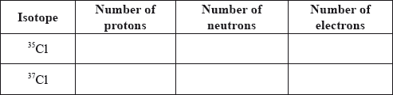
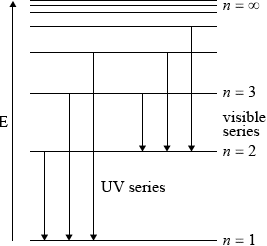
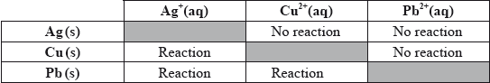
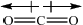
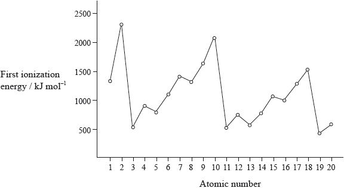
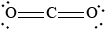

SL Paper 2
Chlorine occurs in Group 7, the halogens.
Two stable isotopes of chlorine are \(^{{\text{35}}}{\text{Cl}}\) and \(^{{\text{37}}}{\text{Cl}}\) with mass numbers 35 and 37 respectively.
Chlorine has an electronegativity value of 3.2 on the Pauling scale.
Chloroethene, H2C=CHCl, the monomer used in the polymerization reaction in the manufacture of the polymer poly(chloroethene), PVC, can be synthesized in the following two-stage reaction pathway.
\[\begin{array}{*{20}{l}} {{\text{Stage 1:}}}&{{{\text{C}}_2}{{\text{H}}_4}{\text{(g)}} + {\text{C}}{{\text{l}}_2}{\text{(g)}} \to {\text{ClC}}{{\text{H}}_2}{\text{C}}{{\text{H}}_2}{\text{Cl(g)}}} \\ {{\text{Stage 2:}}}&{{\text{ClC}}{{\text{H}}_2}{\text{C}}{{\text{H}}_2}{\text{Cl(g)}} + {\text{HC=CHCl(g)}} + {\text{HCl(g)}}} \end{array}\]
Define the term isotopes of an element.
Calculate the number of protons, neutrons and electrons in the isotopes 35Cl and 37Cl.

Using the mass numbers of the two isotopes and the relative atomic mass of chlorine from Table 5 of the Data Booklet, determine the percentage abundance of each isotope.
Percentage abundance 35Cl:
Percentage abundance 37Cl:
Define the term electronegativity.
Using Table 7 of the Data Booklet, explain the trends in electronegativity values of the Group 7 elements from F to I.
State the balanced chemical equation for the reaction of potassium bromide, KBr(aq), with chlorine, Cl2(aq).
Describe the colour change likely to be observed in this reaction.
Determine the enthalpy change, \(\Delta H\), in \({\text{kJ}}\,{\text{mo}}{{\text{l}}^{ - 1}}\), for stage 1 using average bond enthalpy data from Table 10 of the Data Booklet.
State whether the reaction given in stage 1 is exothermic or endothermic.
Draw the structure of poly(chloroethene) showing two repeating units.
Suggest why monomers are often gases or volatile liquids whereas polymers are solids.
Markscheme
atoms of same element / atoms with same number of protons/atomic number/Z;
Do not allow elements instead of atoms in second alternative.
(but) different numbers of neutrons/mass number/A;

Allow [1 max] for 17 p, 17 e for both if n’s are omitted or incorrect.
Allow [1 max] for 35Cl: 18 n and 37Cl: 20 n if p’s and e’s are omitted.
\(({\text{for}}{{\text{ }}^{{\text{35}}}}{\text{Cl}}:x\% ){\text{ }}35x + 3700 - 37x = 3545\);
Allow other alternative mathematical arrangements.
\(^{{\text{35}}}{\text{Cl}} = 77.5\% \) and \(^{{\text{37}}}{\text{Cl}} = 22.5\% \);
Award [1 max] for correct percentages if no correct working is shown.
ability of atom/nucleus to attract bonding/shared pair of electrons / attraction of nucleus for bonding/shared pair of electrons / OWTTE;
Do not allow element instead of atom/nucleus.
increasing atomic radii (down the group) / OWTTE;
so reduced attraction (for the bonding electrons) / OWTTE;
screening/shielding effect of inner electrons / OWTTE;
Allow more energy levels/electron shells for M1.
Do not accept decrease in nuclear charge.
\({\text{2KBr(aq)}} + {\text{C}}{{\text{l}}_2}{\text{(aq)}} \to {\text{2KCl(aq)}} + {\text{B}}{{\text{r}}_2}{\text{(aq)}}\);
Ignore state symbols.
Allow ionic equation.
colourless/pale yellow/green to yellow/orange/brown;
Start and end colours must both be mentioned.
Bonds breaking:
1 \( \times \) (C=C) \( + \) 4 \( \times \) (C–H) \( + \) 1 \( \times \) (Cl–Cl)
\( = (1)(612) + (4)(413) + (1)(243)/ = ( + )2507{\text{ (kJ}}\,{\text{mo}}{{\text{l}}^{ - 1}}{\text{)}}\);
Bonds forming:
1 \( \times \) (C–C) \( + \) 4 \( \times \) (C–H) \( + \) 2 \( \times \) (Cl–Cl)
\( = (1)(347) + (4)(413) + (2)(346)/ = - 2691{\text{ (kJ}}\,{\text{mo}}{{\text{l}}^{ - 1}}{\text{)}}\);
Enthalpy change:
\((2507 - 2691 = ){\text{ }} - 184{\text{ (kJ}}\,{\text{mo}}{{\text{l}}^{ - 1}}{\text{)}}\);
OR
Bonds breaking:
1 \( \times \) (C=C) \( + \) 1 \( \times \) (Cl–Cl)
\( = (1)(612) + (1)(243)/ = ( + )855{\text{ (kJ}}\,{\text{mo}}{{\text{l}}^{ - 1}}{\text{)}}\);
Bonds forming:
1 \( \times \) (C–C) \( + \) 2 \( \times \) (C–Cl)
\( = (1)(347) + (2)(346)/ = - 1039{\text{ (kJ}}\,{\text{mo}}{{\text{l}}^{ - 1}}{\text{)}}\);
Enthalpy change:
\((855 - 1039 = ){\text{ }} - 184{\text{ (kJ}}\,{\text{mo}}{{\text{l}}^{ - 1}}{\text{)}}\);
Award [3] for correct final answer.
exothermic;
Do not award mark unless based on some value for part (iii).
representation of PVC showing two repeating units;
For example,

Brackets not necessary but continuation bonds must be given.
No penalty if chlorines are not on same side.
No penalty if chlorines are on two middle C atoms or on two end C atoms.
monomers are smaller molecules / monomers have smaller mass / smaller surface area than polymers;
weaker/fewer intermolecular/London/dispersion/van der Waals’ forces (of attraction);
Allow reverse argument.
Allow abbreviation for London/dispersion as FDL or for van der Waals’ as vdW.
Award zero if reference is made to breaking of bonds.
Examiners report
This was by far the most popular choice of question in Section B. Again, part a) (i) proved challenging as many candidates failed to refer to atoms in their definition and scored only 1 mark out of 2.
In a) (ii) most candidates could state the numbers of protons, neutrons and electrons in the isotopes of chlorine. Those who got this wrong gave answers which indicated a complete lack of understanding of atomic structure.
In a) (iii) some candidates remembered the percentage abundance of chlorine isotopes but could not do the calculation.
Part b) (i) required another definition. Again, many candidates lost marks for inarticulate responses.
The explanation in b) (ii) of trends in electronegativity values was reasonably well done, with most candidates scoring at least one mark out of two.
However, writing a balanced equation in b) (iii) was poorly done with many candidates not knowing the formula of KCl, and not knowing what products would be formed. This is clearly on the syllabus in 3.3.1.
Almost no-one knew the colours of aqueous chlorine and aqueous bromine in b) (iv).
In part c) (ii) the calculation of \(\Delta H\) using bond enthalpies was done well. Some candidates failed to use the C=C bond enthalpy value and some did not recall that bond breaking is endothermic and bond formation exothermic.
Nearly everyone scored a mark in c) (iii) as follow-through marks were awarded.
Drawing two repeating units of poly(chloroethene) presented difficulties in c) (iv). Some candidates tried to draw the monomers joined through the chlorine atoms.
In c) (v) most candidates scored at least one out of two for explaining why monomers have a much lower melting point than polymers.
Table 8 of the Data Booklet shows the atomic and ionic radii of the elements.
Describe and explain the trend in atomic radius across period 3.
A student formulates the following hypothesis: “If phosphorus were to form a positive ion, \({{\text{P}}^{3 + }}\), its ionic radius would probably be between \({\text{110}} \times {\text{1}}{{\text{0}}^{ - 12}}{\text{ m}}\) and \({\text{212}} \times {\text{1}}{{\text{0}}^{ - 12}}{\text{ m}}\).” Evaluate this hypothesis.
Markscheme
decreases (from left to right/across period 3);
same number of shells/energy levels / shielding effect remains the same;
number of protons/nuclear charge increases so attraction of nucleus on outer electrons increases / OWTTE;
hypothesis is wrong since ionic radius should be smaller than atomic radius/\({\text{110}} \times {\text{1}}{{\text{0}}^{ - 12}}{\text{ m}}\);
greater attraction of the nucleus on outer electrons / effective charge of nucleus greater / repulsive forces between electrons smaller;
Examiners report
The trend of atomic radii was described well, but many candidates explained the increased attraction between nucleus and electrons with increasing amount of electrons instead of protons. Very few mentioned that electrons are being added to the same level.
Many thought that the ionic radius in the data booklet was for \({{\text{P}}^{3 + }}\). Others suggested that the \({{\text{P}}^{3 + }}\) radius would be smaller, but did not specify what it would be smaller than. Many thought that fewer outer electrons in the outer shell mean weaker attraction from the nucleus.
Sodium oxide, \({\text{N}}{{\text{a}}_{\text{2}}}{\text{O}}\), is a white solid with a high melting point.
Explain why solid sodium oxide is a non-conductor of electricity.
Molten sodium oxide is a good conductor of electricity. State the half-equation for the reaction occurring at the positive electrode during the electrolysis of molten sodium oxide.
State the acid-base nature of sodium oxide.
State the equation for the reaction of sodium oxide with water.
Markscheme
in the solid state ions are in fixed positions/there are no moveable ions / OWTTE;
Do not accept answer that refers to atoms or molecules.
\({\text{2}}{{\text{O}}^{2 - }} \to {{\text{O}}_2} + {\text{4}}{{\text{e}}^ - }/{{\text{O}}^{2 - }} \to \frac{1}{2}{{\text{O}}_2} + {\text{2}}{{\text{e}}^ - }\);
Accept e instead of e–.
basic;
Allow alkaline
\({\text{N}}{{\text{a}}_2}{\text{O}} + {{\text{H}}_2}{\text{O}} \to {\text{2NaOH}}/{\text{N}}{{\text{a}}_2}{\text{O}} + {{\text{H}}_2}{\text{O}} \to {\text{2N}}{{\text{a}}^ + } + {\text{2O}}{{\text{H}}^ - }\);
Do not accept \( \rightleftharpoons \)
Examiners report
This was expected to be a high-scoring question but this was not found in practice. In Part (a) there were many references to delocalised/mobile electrons and also molecules and atoms. It did not appear that the structural properties of ionic substances are well understood.
There were many attempts in (b) which involved the sodium ion rather than the oxide and those who chose oxide often had difficulty in producing a balanced equation.
The best answered part of this question was Part (c) though a significant percentage described it as a weak base.
The best answered part of this question was Part (c) though a significant percentage described it as a weak base.
Iron rusts in the presence of oxygen and water. Rusting is a redox process involving several steps that produces hydrated iron(III) oxide, \({\text{F}}{{\text{e}}_{\text{2}}}{{\text{O}}_{\text{3}}} \bullet {\text{n}}{{\text{H}}_{\text{2}}}{\text{O}}\), as the final product.
The half-equations involved for the first step of rusting are given below.
Half-equation 1: \({\text{Fe(s)}} \to {\text{F}}{{\text{e}}^{2 + }}{\text{(aq)}} + {\text{2}}{{\text{e}}^ - }\)
Half-equation 2: \({{\text{O}}_{\text{2}}}{\text{(aq)}} + {\text{4}}{{\text{e}}^ - } + {\text{2}}{{\text{H}}_{\text{2}}}{\text{O(l)}} \to {\text{4O}}{{\text{H}}^ - }{\text{(aq)}}\)
A voltaic cell is made from a half-cell containing a magnesium electrode in a solution of magnesium nitrate and a half-cell containing a silver electrode in a solution of silver(I) nitrate.

Hydrogen peroxide decomposes according to the equation below.
\[{\text{2}}{{\text{H}}_{\text{2}}}{{\text{O}}_{\text{2}}}{\text{(aq)}} \to {\text{2}}{{\text{H}}_{\text{2}}}{\text{O(l)}} + {{\text{O}}_{\text{2}}}{\text{(g)}}\]
The rate of the decomposition can be monitored by measuring the volume of oxygen gas released. The graph shows the results obtained when a solution of hydrogen peroxide decomposed in the presence of a CuO catalyst.

(i) Identify whether half-equation 1 represents oxidation or reduction, giving a reason for your answer.
(ii) Identify the oxidation number of each atom in the three species in half-equation 2.

(iii) Deduce the overall redox equation for the first step of rusting by combining half-equations 1 and 2.
(iv) Identify the reducing agent in the redox equation in part (iii).
The oxygen in half-equation 2 is atmospheric oxygen that is found dissolved in water in very small concentrations. Explain, in terms of intermolecular forces, why oxygen is not very soluble in water.
(i) Given that magnesium is more reactive than silver, deduce the half-equations for the reactions occurring at each electrode, including state symbols.
Negative electrode (anode):
Positive electrode (cathode):
(ii) Outline one function of the salt bridge.
(i) State the property that determines the order in which elements are arranged in the periodic table.
(ii) State the relationship between the electron arrangement of an element and its group and period in the periodic table.
(i) The experiment is repeated with the same amount of a more effective catalyst, \({\text{Mn}}{{\text{O}}_{\text{2}}}\), under the same conditions and using the same concentration and volume of hydrogen peroxide. On the graph above, sketch the curve you would expect.
(ii) Outline how the initial rate of reaction can be found from the graph.
(iii) Outline a different experimental procedure that can be used to monitor the decomposition rate of hydrogen peroxide.
(iv) A Maxwell–Boltzmann energy distribution curve is drawn below. Label both axes and explain, by annotating the graph, how catalysts increase the rate of reaction.

Markscheme
(i) oxidation and (iron/Fe) loses electrons/increases in oxidation number/state;
(ii)  ;
;
Award [2] for five correct.
Award [1] for four correct.
Accept use of oxidation states (0, +1, –2, –2, +1) for oxidation numbers.
Penalize once for incorrect notation (eg, 2, 2–).
(iii) \({{\text{O}}_2}{\text{(aq)}} + {\text{2}}{{\text{H}}_2}{\text{O(l)}} + {\text{2Fe(s)}} \to {\text{2F}}{{\text{e}}^{2 + }}{\text{(aq)}} + {\text{4O}}{{\text{H}}^ - }{\text{(aq)}}\);
Ignore state symbols.
(iv) Fe/iron;
oxygen is non-polar;
needs to break strong hydrogen bonds/H–bonds between water molecules (to dissolve) / oxygen cannot form hydrogen bonds/H–bonds with water;
oxygen can only form (weak) van der Waals’/vdW/LDF/London/dispersion forces with water;
(i) Negative electrode (anode):
\({\text{Mg(s)}} \to {\text{M}}{{\text{g}}^{2 + }}{\text{(aq)}} + {\text{2}}{{\text{e}}^ - }/\frac{1}{2}{\text{Mg(s)}} \to \frac{1}{2}{\text{M}}{{\text{g}}^{2 + }}{\text{(aq)}} + {{\text{e}}^ - }/\)
\({\text{Mg(s)}} - {\text{2}}{{\text{e}}^ - } \to {\text{M}}{{\text{g}}^{2 + }}{\text{(aq)}}/\frac{1}{2}{\text{Mg(s)}} - {{\text{e}}^ - } \to \frac{1}{2}{\text{M}}{{\text{g}}^{2 + }}{\text{(aq)}}\);
Accept equations for the oxidation of water/hydroxide ions.
Positive electrode (cathode):
\({\text{A}}{{\text{g}}^ + }{\text{(aq)}} + {{\text{e}}^ - } \to {\text{Ag (s)}}\);
Accept Ag equation doubled so that both electrodes involve 2 electrons.
Accept e instead of e–.
Award [1 max] if both equations are correct but the state symbols are missing/incorrect.
Award [1 max] if both equations are reversed but state symbols correct.
(ii) provides ions that flow into electrolytes/half-cells / maintains electrical neutrality of solutions/electrolytes / provides electrical continuity by providing path for migrating ions;
Accept completes the (electrical) circuit / allows current to flow / OWTTE.
(i) atomic number / number of protons;
Accept number of electrons in a (neutral) atom.
(ii) groups indicate the number of electrons in the highest energy level/outer/valence shell;
periods indicate the number of (occupied) energy levels/shells (in the atom);
(i) steeper curve with a similar shape that reaches same maximum volume of \({{\text{O}}_{\text{2}}}\);
(ii) (draw a) tangent to the curve at origin/time = 0/start of reaction;
(calculate) the gradient/slope (of the tangent);
(iii) measure/monitor mass/pressure/\({\text{[}}{{\text{H}}_{\text{2}}}{{\text{O}}_{\text{2}}}{\text{]}}\);
Accept measure/monitor temperature of system.
(iv) y-axis: probability / fraction of molecules/particles / probability density
Allow “number of particles/molecules” on y-axis.
and
x-axis: (kinetic) energy;
Accept “speed/velocity” on x-axis.

correct relative position of \({E_{\text{a}}}\) catalysed and \({E_{\text{a}}}\) uncatalysed;
more/greater proportion of molecules/collisions have the lower/required/catalysed \({E_{\text{a}}}\) (and can react upon collision);
M3 can be scored by shading and annotating the graph.
Accept a greater number/proportion of successful collisions as catalyst reduces Ea.
Examiners report
In Part (a) almost all candidates could correctly identify the equation as an oxidation reaction and justify their choice. Assigning oxidation numbers to particular species proved slightly trickier, with many not knowing that elements always have an oxidation state of zero.
Combining the half equations also provided a bit of challenge with many equations having residual electrons, though most students could correctly identify the reducing agent. The aqueous solubility of oxygen gas in Part (b) was poorly explained, with the discussion being most frequently in terms of polarity rather than invoking hydrogen bonding. The electrolysis question in Part (c) was generally well answered, though most relied on “completing the circuit” to obtain the salt bridge mark with few showing any comprehension of the way in which this was achieved. Both the property responsible for the ordering of the periodic table and the relationship of electronic structure to position in the periodic table, required for Part (d), were well known and it was rare for a student not to gain full marks. Similarly in Part (e), most students correctly drew the curve that would result from a more effective catalyst. Many also seemed to be aware of the basic idea of how to find the reaction rate, though correct use of the terms “tangent” and “gradient” was rare and many failed to note it referred to “initial rate”. Most students could also identify an appropriate alternative method for monitoring the rate. In the final section most students could accurately label the axes of a Maxwell-Boltzmann curve and many could also use it to explain the effect of a catalyst, though some weaker students confused this with the effect of temperature and constructed a second curve.
In Part (a) almost all candidates could correctly identify the equation as an oxidation reaction and justify their choice. Assigning oxidation numbers to particular species proved slightly trickier, with many not knowing that elements always have an oxidation state of zero.
Combining the half equations also provided a bit of challenge with many equations having residual electrons, though most students could correctly identify the reducing agent. The aqueous solubility of oxygen gas in Part (b) was poorly explained, with the discussion being most frequently in terms of polarity rather than invoking hydrogen bonding. The electrolysis question in Part (c) was generally well answered, though most relied on “completing the circuit” to obtain the salt bridge mark with few showing any comprehension of the way in which this was achieved. Both the property responsible for the ordering of the periodic table and the relationship of electronic structure to position in the periodic table, required for Part (d), were well known and it was rare for a student not to gain full marks. Similarly in Part (e), most students correctly drew the curve that would result from a more effective catalyst. Many also seemed to be aware of the basic idea of how to find the reaction rate, though correct use of the terms “tangent” and “gradient” was rare and many failed to note it referred to “initial rate”. Most students could also identify an appropriate alternative method for monitoring the rate. In the final section most students could accurately label the axes of a Maxwell-Boltzmann curve and many could also use it to explain the effect of a catalyst, though some weaker students confused this with the effect of temperature and constructed a second curve.
In Part (a) almost all candidates could correctly identify the equation as an oxidation reaction and justify their choice. Assigning oxidation numbers to particular species proved slightly trickier, with many not knowing that elements always have an oxidation state of zero.
Combining the half equations also provided a bit of challenge with many equations having residual electrons, though most students could correctly identify the reducing agent. The aqueous solubility of oxygen gas in Part (b) was poorly explained, with the discussion being most frequently in terms of polarity rather than invoking hydrogen bonding. The electrolysis question in Part (c) was generally well answered, though most relied on “completing the circuit” to obtain the salt bridge mark with few showing any comprehension of the way in which this was achieved. Both the property responsible for the ordering of the periodic table and the relationship of electronic structure to position in the periodic table, required for Part (d), were well known and it was rare for a student not to gain full marks. Similarly in Part (e), most students correctly drew the curve that would result from a more effective catalyst. Many also seemed to be aware of the basic idea of how to find the reaction rate, though correct use of the terms “tangent” and “gradient” was rare and many failed to note it referred to “initial rate”. Most students could also identify an appropriate alternative method for monitoring the rate. In the final section most students could accurately label the axes of a Maxwell-Boltzmann curve and many could also use it to explain the effect of a catalyst, though some weaker students confused this with the effect of temperature and constructed a second curve.
In Part (a) almost all candidates could correctly identify the equation as an oxidation reaction and justify their choice. Assigning oxidation numbers to particular species proved slightly trickier, with many not knowing that elements always have an oxidation state of zero.
Combining the half equations also provided a bit of challenge with many equations having residual electrons, though most students could correctly identify the reducing agent. The aqueous solubility of oxygen gas in Part (b) was poorly explained, with the discussion being most frequently in terms of polarity rather than invoking hydrogen bonding. The electrolysis question in Part (c) was generally well answered, though most relied on “completing the circuit” to obtain the salt bridge mark with few showing any comprehension of the way in which this was achieved. Both the property responsible for the ordering of the periodic table and the relationship of electronic structure to position in the periodic table, required for Part (d), were well known and it was rare for a student not to gain full marks. Similarly in Part (e), most students correctly drew the curve that would result from a more effective catalyst. Many also seemed to be aware of the basic idea of how to find the reaction rate, though correct use of the terms “tangent” and “gradient” was rare and many failed to note it referred to “initial rate”. Most students could also identify an appropriate alternative method for monitoring the rate. In the final section most students could accurately label the axes of a Maxwell-Boltzmann curve and many could also use it to explain the effect of a catalyst, though some weaker students confused this with the effect of temperature and constructed a second curve.
In Part (a) almost all candidates could correctly identify the equation as an oxidation reaction and justify their choice. Assigning oxidation numbers to particular species proved slightly trickier, with many not knowing that elements always have an oxidation state of zero.
Combining the half equations also provided a bit of challenge with many equations having residual electrons, though most students could correctly identify the reducing agent. The aqueous solubility of oxygen gas in Part (b) was poorly explained, with the discussion being most frequently in terms of polarity rather than invoking hydrogen bonding. The electrolysis question in Part (c) was generally well answered, though most relied on “completing the circuit” to obtain the salt bridge mark with few showing any comprehension of the way in which this was achieved. Both the property responsible for the ordering of the periodic table and the relationship of electronic structure to position in the periodic table, required for Part (d), were well known and it was rare for a student not to gain full marks. Similarly in Part (e), most students correctly drew the curve that would result from a more effective catalyst. Many also seemed to be aware of the basic idea of how to find the reaction rate, though correct use of the terms “tangent” and “gradient” was rare and many failed to note it referred to “initial rate”. Most students could also identify an appropriate alternative method for monitoring the rate. In the final section most students could accurately label the axes of a Maxwell-Boltzmann curve and many could also use it to explain the effect of a catalyst, though some weaker students confused this with the effect of temperature and constructed a second curve.
Oxidation and reduction can be defined in terms of electron transfer or oxidation numbers.
Alcohols with the molecular formula \({{\text{C}}_{\text{4}}}{{\text{H}}_{\text{9}}}{\text{OH}}\) occur as four structural isomers. Three of the isomers can be oxidized with acidified potassium dichromate solution to form compounds with the molecular formula \({{\text{C}}_{\text{4}}}{{\text{H}}_{\text{8}}}{\text{O}}\). The half-equation for the dichromate ion is:
\[{\text{C}}{{\text{r}}_2}{\text{O}}_7^{2 - }{\text{(aq)}} + {\text{14}}{{\text{H}}^ + }{\text{(aq)}} + {\text{6}}{{\text{e}}^ - } \rightleftharpoons {\text{2C}}{{\text{r}}^{3 + }}{\text{(aq)}} + {\text{7}}{{\text{H}}_2}{\text{O(l)}}\]
Electrolysis has made it possible to obtain reactive metals from their ores.
A reactivity series can be experimentally determined by adding the metals W, X, Y and Z to solutions of these metal ions. The following reactions were observed:
\({{\text{W}}^{2 + }}{\text{(aq)}} + {\text{X(s)}} \to {\text{W(s)}} + {{\text{X}}^{2 + }}{\text{(aq)}}\)
\({\text{Y(s)}} + {{\text{W}}^{2 + }}{\text{(aq)}} \to {{\text{Y}}^{2 + }}{\text{(aq)}} + {\text{W(s)}}\)
\({{\text{Z}}^{2 + }}{\text{(aq)}} + {\text{W(s)}} \to {\text{Z(s)}} + {{\text{W}}^{2 + }}{\text{(aq)}}\)
\({\text{Y(s)}} + {{\text{X}}^{2 + }}{\text{(aq)}} \to {{\text{Y}}^{2 + }}{\text{(aq)}} + {\text{X(s)}}\)
Define oxidation in terms of electron transfer.
(i) Deduce the oxidation number of chromium in \({\text{C}}{{\text{r}}_{\text{2}}}{\text{O}}_{\text{7}}^{2 - }\).
(ii) Deduce the half-equation for the oxidation of the alcohol \({{\text{C}}_{\text{4}}}{{\text{H}}_{\text{9}}}{\text{OH}}\).
(iii) Deduce the overall equation for the redox reaction.
(iv) Two of the isomers with the molecular formula \({{\text{C}}_{\text{4}}}{{\text{H}}_{\text{9}}}{\text{OH}}\) can be oxidized further to form compounds with the molecular formula \({{\text{C}}_{\text{4}}}{{\text{H}}_{\text{8}}}{{\text{O}}_{\text{2}}}\). Deduce the structural formulas of these two isomers.
(v) One isomer cannot be oxidized by acidified potassium dichromate solution.
Deduce its structural formula, state its name and identify it as a primary, secondary or tertiary alcohol.
Name:
Alcohol:
(vi) All isomers of the alcohol \({{\text{C}}_{\text{4}}}{{\text{H}}_{\text{9}}}{\text{OH}}\) undergo complete combustion. State an equation for the complete combustion of \({{\text{C}}_{\text{4}}}{{\text{H}}_{\text{9}}}{\text{OH}}\).
(i) Draw a labelled electrolytic cell for the electrolysis of molten potassium bromide, KBr. Include the direction of electron flow, the positive electrode (anode) and the negative electrode (cathode), the location of oxidation and reduction, and the electrolyte.
(ii) Deduce a half-equation for the reaction that occurs at each electrode.
Positive electrode (anode):
Negative electrode (cathode):
(iii) Describe how current is conducted in a molten electrolyte.
(i) Deduce the order of reactivity of these four metals, from the least to the most reactive.
(ii) A voltaic cell is made by connecting a half-cell of X in \({\text{XC}}{{\text{l}}_{\text{2}}}{\text{(aq)}}\) to a half-cell of Z in \({\text{ZC}}{{\text{l}}_{\text{2}}}{\text{(aq)}}\). Deduce the overall equation for the reaction taking place when the cell is operating.
Markscheme
loss of electrons;
(i) \( + 6{\text{/VI}}\);
Do not award mark if incorrect notation used, ie, 6 , 6+ or –6.
(ii) \({{\text{C}}_4}{{\text{H}}_9}{\text{OH(l)}} \to {{\text{C}}_4}{{\text{H}}_8}{\text{O(l)}} + {\text{2}}{{\text{H}}^ + }{\text{(aq)}} + {\text{2}}{{\text{e}}^ - }\);
Ignore state symbols.
(iii) \({\text{3}}{{\text{C}}_4}{{\text{H}}_9}{\text{OH(l)}} + {\text{C}}{{\text{r}}_2}{\text{O}}_7^{2 - }{\text{(aq)}} + {\text{8}}{{\text{H}}^ + }{\text{(aq)}} \to {\text{3}}{{\text{C}}_4}{{\text{H}}_8}{\text{O(l)}} + {\text{2C}}{{\text{r}}^{3 + }}{\text{(aq)}} + {\text{7}}{{\text{H}}_2}{\text{O(l)}}\);
Ignore state symbols.
(iv) \({\text{C}}{{\text{H}}_3}{\text{C}}{{\text{H}}_2}{\text{C}}{{\text{H}}_2}{\text{C}}{{\text{H}}_2}{\text{OH}}\);
\({{\text{(C}}{{\text{H}}_3}{\text{)}}_2}{\text{CHC}}{{\text{H}}_2}{\text{OH}}\);
Accept full or condensed structural formulas.
(v) \({{\text{(C}}{{\text{H}}_3}{\text{)}}_3}{\text{COH}}\);
2-methylpropan-2-ol;
Allow 2-methyl-2-propanol , methylpropan-2-ol, methyl-2-propanol.
tertiary;
(vi) \({{\text{C}}_4}{{\text{H}}_9}{\text{OH}} + {\text{6}}{{\text{O}}_2} \to {\text{4C}}{{\text{O}}_2} + {\text{5}}{{\text{H}}_2}{\text{O}}/{{\text{(C}}{{\text{H}}_3}{\text{)}}_3}{\text{COH}} + {\text{6}}{{\text{O}}_2} \to {\text{4C}}{{\text{O}}_2} + {\text{5}}{{\text{H}}_2}{\text{O}}\)
correct reactants and products;
correct balancing;
(i) (DC) power supply

(DC) power supply / battery;
electrodes labelled as +/anode or –/cathode and electron flow;
reduction at negative electrode (cathode) / oxidation at positive electrode (anode);
electrolyte / molten KBr/KBr(l) / \({{\text{K}}^ + }{\text{(l)}}\) and \({\text{B}}{{\text{r}}^ - }{\text{(l)}}\);
(ii) Positive electrode (anode):
\({\text{2B}}{{\text{r}}^ - }{\text{(l)}} \to {\text{B}}{{\text{r}}_2}{\text{(l)}} + {\text{2}}{{\text{e}}^ - }\);
Negative electrode (cathode):
\({{\text{K}}^ + }{\text{(l)}} + {{\text{e}}^ - } \to {\text{K(l)}}\);
Award [1 max] if correct half-equations are given at the wrong electrodes.
Allow e instead of e–.
Ignore state symbols.
Penalize equilibrium sign once only.
(iii) positive ions move towards negative electrode (cathode) and negative ions move towards positive electrode (anode) / ions move to oppositely charged electrode / negative ions give up electrons at positive electrode and positive ions gain electrons at negative electrode;
(i) \({\text{Z}} < {\text{W}} < {\text{X}} < {\text{Y}}\);
Accept \(Y > X > W > Z\).
(ii) \({\text{X(s)}} + {{\text{Z}}^{2 + }}{\text{(aq)}} \to {{\text{X}}^{2 + }}{\text{(aq)}} + {\text{Z(s)}}\);
Ignore state symbols.
Accept X(s) + ZCl2(aq) \( \to \) XCl2(aq) + Z(s).
Examiners report
This was another popular choice of question in Section B. In part (a) almost all candidates defined oxidation correctly. The oxidation number of chromium was mostly determined correctly in (b)(i), but only the better candidates could write the half-equation for the oxidation of the alcohol \({{\text{C}}_{\text{4}}}{{\text{H}}_{\text{9}}}{\text{OH}}\) in (b)(ii), even though the product was identified in the question as \({{\text{C}}_{\text{4}}}{{\text{H}}_{\text{8}}}{\text{O}}\). Subsequently the overall equation of the redox reaction in (b)(iii) was poorly answered. One respondent stated that balanced redox equations are not required. This is stated in 9.2.2. In (b)(iv), candidates who realized the product with molecular formula \({{\text{C}}_{\text{4}}}{{\text{H}}_{\text{8}}}{{\text{O}}_{\text{2}}}\) was an acid, deduced correct formulas of the two primary alcohols, though some did not read the question and gave the formulae for the acid and not the alcohol. Commonly, candidates drew isomers of \({{\text{C}}_{\text{4}}}{{\text{H}}_{\text{9}}}{\text{OH}}\) giving one primary structure and one secondary structure. Incorrect structures frequently had oxygen atoms connected to the molecule with single bonds but nothing else attached. Part (v) required candidates to identify the isomer which cannot be oxidized by acidified potassium dichromate solution. Many candidates correctly gave the formula and name of the tertiary alcohol. In (b)(vi) several candidates gave a correct equation for the combustion of alcohols but more usually one mark was scored for correct reactants and products and the mark for correct balancing was missed. Part (c) was on electrolysis. There were several poorly drawn electrolytic cells in (c)(i), sometimes even with the electrodes outside of the electrolyte, but most candidates managed a few marks and many candidates scored full marks. A significant number of candidates drew a voltaic cell with a salt bridge and a small minority had the battery terminals incorrectly connected or drew a voltmeter. The half-equations for electrode reactions were poorly done in (c)(ii) with several candidates again writing whole equations. The reduction of the potassium ion was often given at the anode and the oxidation of the bromide ion was seldom done well with many candidates writing a reduction half-equation for Br2. In (c)(iii) candidates described poorly how current is conducted in a molten electrolyte. The common response was that electrons are forced through the solution from the cathode to the anode. Many candidates deduced a correct order of reactivity for the metals listed in (d)(i) but the overall equation for the reaction occurring in a voltaic cell made from two of the metals was either done well or was completely wrong in (d)(ii).
This was another popular choice of question in Section B. In part (a) almost all candidates defined oxidation correctly. The oxidation number of chromium was mostly determined correctly in (b)(i), but only the better candidates could write the half-equation for the oxidation of the alcohol \({{\text{C}}_{\text{4}}}{{\text{H}}_{\text{9}}}{\text{OH}}\) in (b)(ii), even though the product was identified in the question as \({{\text{C}}_{\text{4}}}{{\text{H}}_{\text{8}}}{\text{O}}\). Subsequently the overall equation of the redox reaction in (b)(iii) was poorly answered. One respondent stated that balanced redox equations are not required. This is stated in 9.2.2. In (b)(iv), candidates who realized the product with molecular formula \({{\text{C}}_{\text{4}}}{{\text{H}}_{\text{8}}}{{\text{O}}_{\text{2}}}\) was an acid, deduced correct formulas of the two primary alcohols, though some did not read the question and gave the formulae for the acid and not the alcohol. Commonly, candidates drew isomers of \({{\text{C}}_{\text{4}}}{{\text{H}}_{\text{9}}}{\text{OH}}\) giving one primary structure and one secondary structure. Incorrect structures frequently had oxygen atoms connected to the molecule with single bonds but nothing else attached. Part (v) required candidates to identify the isomer which cannot be oxidized by acidified potassium dichromate solution. Many candidates correctly gave the formula and name of the tertiary alcohol. In (b)(vi) several candidates gave a correct equation for the combustion of alcohols but more usually one mark was scored for correct reactants and products and the mark for correct balancing was missed. Part (c) was on electrolysis. There were several poorly drawn electrolytic cells in (c)(i), sometimes even with the electrodes outside of the electrolyte, but most candidates managed a few marks and many candidates scored full marks. A significant number of candidates drew a voltaic cell with a salt bridge and a small minority had the battery terminals incorrectly connected or drew a voltmeter. The half-equations for electrode reactions were poorly done in (c)(ii) with several candidates again writing whole equations. The reduction of the potassium ion was often given at the anode and the oxidation of the bromide ion was seldom done well with many candidates writing a reduction half-equation for Br2. In (c)(iii) candidates described poorly how current is conducted in a molten electrolyte. The common response was that electrons are forced through the solution from the cathode to the anode. Many candidates deduced a correct order of reactivity for the metals listed in (d)(i) but the overall equation for the reaction occurring in a voltaic cell made from two of the metals was either done well or was completely wrong in (d)(ii).
This was another popular choice of question in Section B. In part (a) almost all candidates defined oxidation correctly. The oxidation number of chromium was mostly determined correctly in (b)(i), but only the better candidates could write the half-equation for the oxidation of the alcohol \({{\text{C}}_{\text{4}}}{{\text{H}}_{\text{9}}}{\text{OH}}\) in (b)(ii), even though the product was identified in the question as \({{\text{C}}_{\text{4}}}{{\text{H}}_{\text{8}}}{\text{O}}\). Subsequently the overall equation of the redox reaction in (b)(iii) was poorly answered. One respondent stated that balanced redox equations are not required. This is stated in 9.2.2. In (b)(iv), candidates who realized the product with molecular formula \({{\text{C}}_{\text{4}}}{{\text{H}}_{\text{8}}}{{\text{O}}_{\text{2}}}\) was an acid, deduced correct formulas of the two primary alcohols, though some did not read the question and gave the formulae for the acid and not the alcohol. Commonly, candidates drew isomers of \({{\text{C}}_{\text{4}}}{{\text{H}}_{\text{9}}}{\text{OH}}\) giving one primary structure and one secondary structure. Incorrect structures frequently had oxygen atoms connected to the molecule with single bonds but nothing else attached. Part (v) required candidates to identify the isomer which cannot be oxidized by acidified potassium dichromate solution. Many candidates correctly gave the formula and name of the tertiary alcohol. In (b)(vi) several candidates gave a correct equation for the combustion of alcohols but more usually one mark was scored for correct reactants and products and the mark for correct balancing was missed. Part (c) was on electrolysis. There were several poorly drawn electrolytic cells in (c)(i), sometimes even with the electrodes outside of the electrolyte, but most candidates managed a few marks and many candidates scored full marks. A significant number of candidates drew a voltaic cell with a salt bridge and a small minority had the battery terminals incorrectly connected or drew a voltmeter. The half-equations for electrode reactions were poorly done in (c)(ii) with several candidates again writing whole equations. The reduction of the potassium ion was often given at the anode and the oxidation of the bromide ion was seldom done well with many candidates writing a reduction half-equation for Br2. In (c)(iii) candidates described poorly how current is conducted in a molten electrolyte. The common response was that electrons are forced through the solution from the cathode to the anode. Many candidates deduced a correct order of reactivity for the metals listed in (d)(i) but the overall equation for the reaction occurring in a voltaic cell made from two of the metals was either done well or was completely wrong in (d)(ii).
This was another popular choice of question in Section B. In part (a) almost all candidates defined oxidation correctly. The oxidation number of chromium was mostly determined correctly in (b)(i), but only the better candidates could write the half-equation for the oxidation of the alcohol \({{\text{C}}_{\text{4}}}{{\text{H}}_{\text{9}}}{\text{OH}}\) in (b)(ii), even though the product was identified in the question as \({{\text{C}}_{\text{4}}}{{\text{H}}_{\text{8}}}{\text{O}}\). Subsequently the overall equation of the redox reaction in (b)(iii) was poorly answered. One respondent stated that balanced redox equations are not required. This is stated in 9.2.2. In (b)(iv), candidates who realized the product with molecular formula \({{\text{C}}_{\text{4}}}{{\text{H}}_{\text{8}}}{{\text{O}}_{\text{2}}}\) was an acid, deduced correct formulas of the two primary alcohols, though some did not read the question and gave the formulae for the acid and not the alcohol. Commonly, candidates drew isomers of \({{\text{C}}_{\text{4}}}{{\text{H}}_{\text{9}}}{\text{OH}}\) giving one primary structure and one secondary structure. Incorrect structures frequently had oxygen atoms connected to the molecule with single bonds but nothing else attached. Part (v) required candidates to identify the isomer which cannot be oxidized by acidified potassium dichromate solution. Many candidates correctly gave the formula and name of the tertiary alcohol. In (b)(vi) several candidates gave a correct equation for the combustion of alcohols but more usually one mark was scored for correct reactants and products and the mark for correct balancing was missed. Part (c) was on electrolysis. There were several poorly drawn electrolytic cells in (c)(i), sometimes even with the electrodes outside of the electrolyte, but most candidates managed a few marks and many candidates scored full marks. A significant number of candidates drew a voltaic cell with a salt bridge and a small minority had the battery terminals incorrectly connected or drew a voltmeter. The half-equations for electrode reactions were poorly done in (c)(ii) with several candidates again writing whole equations. The reduction of the potassium ion was often given at the anode and the oxidation of the bromide ion was seldom done well with many candidates writing a reduction half-equation for Br2. In (c)(iii) candidates described poorly how current is conducted in a molten electrolyte. The common response was that electrons are forced through the solution from the cathode to the anode. Many candidates deduced a correct order of reactivity for the metals listed in (d)(i) but the overall equation for the reaction occurring in a voltaic cell made from two of the metals was either done well or was completely wrong in (d)(ii).
Draw the Lewis (electron dot) structure of chloromethane.
Predict the shape of the chloromethane molecule and the H–C–H bond angle.
Shape:
Bond angle:
Explain why chloromethane is a polar molecule.
Methanol has a lower molar mass than chloromethane. Explain why the boiling point of methanol is higher than that of chloromethane.
State the equation for the reaction between potassium and chlorine.
Outline the nature of the metallic bonding present in potassium.
Describe the covalent bond present in the chlorine molecule and how it is formed.
Describe the ionic bonding present in potassium chloride and how the ions are formed.
Potassium also reacts with water to form hydrogen gas. Determine the volume, in \({\text{c}}{{\text{m}}^{\text{3}}}\), of hydrogen gas that could theoretically be produced at 273 K and \(1.01 \times {10^5}{\text{ Pa}}\) when 0.0587 g of potassium reacts with excess water.
Identify the acid-base character of the oxides of each of the elements from sodium to chlorine in period 3.
State the equations for the separate reactions of sodium oxide and phosphorus(V) oxide with water.
Markscheme
 ;
;
Accept any combination of lines, dots or crosses to represent electron pairs.
Shape: tetrahedral;
Bond angle: accept any value in the range: 108° to 111°;
(Literature value is 108.2°).
Cl is more electronegative than C / C–Cl bond polar;
bond dipoles do not cancel / asymmetric distribution of electron cloud / (resultant) net dipole moment (from vectorial addition of bond dipoles) going in direction of C–Cl axis / OWTTE;
hydrogen bonding in methanol;
stronger than dipole-dipole/van der Waals’ attractions/forces in chloromethane;
Accept converse argument.
\({\text{2K(s)}} + {\text{C}}{{\text{l}}_2}{\text{(g)}} \to {\text{2KCl(s)}}\);
Ignore state symbols.
(electrostatic) attraction between lattice of cations/positive ions and delocalized electrons;
(electrostatic) attraction between positively charged nuclei and a pair of electrons;
formed as a result of electron sharing;
(electrostatic) attraction between positive and negative ions/oppositely charged ions/cations and anions;
formed as a result of transfer of an electron from a K atom to a Cl atom / OWTTE;
amount of potassium \( = \left( {\frac{{0.0587}}{{39.10}} = } \right){\text{ }}1.5 \times {10^{ - 3}}{\text{ (mol)}}\);
\({\text{2K}} + {\text{2}}{{\text{H}}_2}{\text{O}} \to {\text{2KO}} + {{\text{H}}_2}\) / amount of hydrogen \( = 7.50 \times {10^{ - 4}}{\text{ (mol)}}\);
volume of hydrogen \( = (7.50 \times {10^{ - 4}} \times 22.4 \times 1000 = ){\text{ }}16.8{\text{ (c}}{{\text{m}}^3}{\text{)}}\);
Accept calculation of volume of hydrogen using PV = nRT (answer is 16.9 cm3).
Award [3] for correct final answer.
Na, Mg (oxides): basic
Al (oxide): amphoteric
Do not accept amphiprotic.
Si to Cl (oxides): acidic
Award [2] for all three listed sets correct.
Award [1] for one or two listed sets correct.
Award [1] for stating oxides become more acidic towards right/Cl or more basic towards left/Na.
Do not penalize if reference is to Ar instead of Cl.
Do not penalize for incorrect formulas of oxides.
\({\text{N}}{{\text{a}}_2}{\text{O(s)}} + {{\text{H}}_2}{\text{O(l)}} \to {\text{2NaOH(aq)}}\);
\({{\text{P}}_4}{{\text{O}}_{10}}{\text{(s)}} + {\text{6}}{{\text{H}}_2}{\text{O(l)}} \to {\text{4}}{{\text{H}}_3}{\text{P}}{{\text{O}}_4}{\text{(aq)}}\);
Ignore state symbols.
Accept P2O5(s) + 3H2O(l) \( \to \) 2H3PO4(aq).
Do not award marks if incorrect formulas of the oxides are used.
Examiners report
Probably the least popular option. The drawing of the diagram of chloromethane was generally excellent, as was the prediction/recall of the shape and bond angle. With the reasons for polarity, the concept of bond polarity was well understood, but the idea of asymmetry resulting in a dipole was less clearly appreciated. The construction of the chemical equation was disappointing, as was the description of the three types of bonding, very often missing the important point, in that they are attractions. With the calculation of volume of hydrogen, it was quite rare to get a fully correct answer. The biggest error was to use an incorrect value for the number of moles of hydrogen in the equation \(pV = nRT\), by failing to halve the moles of hydrogen. The use of \(pV = nRT\) also caused problems with units. The acid base nature of oxides of a period were generally well known. In contrast, the construction or recall of correct chemical equations for the reaction with water was a weakness.
Probably the least popular option. The drawing of the diagram of chloromethane was generally excellent, as was the prediction/recall of the shape and bond angle. With the reasons for polarity, the concept of bond polarity was well understood, but the idea of asymmetry resulting in a dipole was less clearly appreciated. The construction of the chemical equation was disappointing, as was the description of the three types of bonding, very often missing the important point, in that they are attractions. With the calculation of volume of hydrogen, it was quite rare to get a fully correct answer. The biggest error was to use an incorrect value for the number of moles of hydrogen in the equation \(pV = nRT\), by failing to halve the moles of hydrogen. The use of \(pV = nRT\) also caused problems with units. The acid base nature of oxides of a period were generally well known. In contrast, the construction or recall of correct chemical equations for the reaction with water was a weakness.
Probably the least popular option. The drawing of the diagram of chloromethane was generally excellent, as was the prediction/recall of the shape and bond angle. With the reasons for polarity, the concept of bond polarity was well understood, but the idea of asymmetry resulting in a dipole was less clearly appreciated. The construction of the chemical equation was disappointing, as was the description of the three types of bonding, very often missing the important point, in that they are attractions. With the calculation of volume of hydrogen, it was quite rare to get a fully correct answer. The biggest error was to use an incorrect value for the number of moles of hydrogen in the equation \(pV = nRT\), by failing to halve the moles of hydrogen. The use of \(pV = nRT\) also caused problems with units. The acid base nature of oxides of a period were generally well known. In contrast, the construction or recall of correct chemical equations for the reaction with water was a weakness.
Probably the least popular option. The drawing of the diagram of chloromethane was generally excellent, as was the prediction/recall of the shape and bond angle. With the reasons for polarity, the concept of bond polarity was well understood, but the idea of asymmetry resulting in a dipole was less clearly appreciated. The construction of the chemical equation was disappointing, as was the description of the three types of bonding, very often missing the important point, in that they are attractions. With the calculation of volume of hydrogen, it was quite rare to get a fully correct answer. The biggest error was to use an incorrect value for the number of moles of hydrogen in the equation \(pV = nRT\), by failing to halve the moles of hydrogen. The use of \(pV = nRT\) also caused problems with units. The acid base nature of oxides of a period were generally well known. In contrast, the construction or recall of correct chemical equations for the reaction with water was a weakness.
Probably the least popular option. The drawing of the diagram of chloromethane was generally excellent, as was the prediction/recall of the shape and bond angle. With the reasons for polarity, the concept of bond polarity was well understood, but the idea of asymmetry resulting in a dipole was less clearly appreciated. The construction of the chemical equation was disappointing, as was the description of the three types of bonding, very often missing the important point, in that they are attractions. With the calculation of volume of hydrogen, it was quite rare to get a fully correct answer. The biggest error was to use an incorrect value for the number of moles of hydrogen in the equation \(pV = nRT\), by failing to halve the moles of hydrogen. The use of \(pV = nRT\) also caused problems with units. The acid base nature of oxides of a period were generally well known. In contrast, the construction or recall of correct chemical equations for the reaction with water was a weakness.
Probably the least popular option. The drawing of the diagram of chloromethane was generally excellent, as was the prediction/recall of the shape and bond angle. With the reasons for polarity, the concept of bond polarity was well understood, but the idea of asymmetry resulting in a dipole was less clearly appreciated. The construction of the chemical equation was disappointing, as was the description of the three types of bonding, very often missing the important point, in that they are attractions. With the calculation of volume of hydrogen, it was quite rare to get a fully correct answer. The biggest error was to use an incorrect value for the number of moles of hydrogen in the equation \(pV = nRT\), by failing to halve the moles of hydrogen. The use of \(pV = nRT\) also caused problems with units. The acid base nature of oxides of a period were generally well known. In contrast, the construction or recall of correct chemical equations for the reaction with water was a weakness.
Probably the least popular option. The drawing of the diagram of chloromethane was generally excellent, as was the prediction/recall of the shape and bond angle. With the reasons for polarity, the concept of bond polarity was well understood, but the idea of asymmetry resulting in a dipole was less clearly appreciated. The construction of the chemical equation was disappointing, as was the description of the three types of bonding, very often missing the important point, in that they are attractions. With the calculation of volume of hydrogen, it was quite rare to get a fully correct answer. The biggest error was to use an incorrect value for the number of moles of hydrogen in the equation \(pV = nRT\), by failing to halve the moles of hydrogen. The use of \(pV = nRT\) also caused problems with units. The acid base nature of oxides of a period were generally well known. In contrast, the construction or recall of correct chemical equations for the reaction with water was a weakness.
Probably the least popular option. The drawing of the diagram of chloromethane was generally excellent, as was the prediction/recall of the shape and bond angle. With the reasons for polarity, the concept of bond polarity was well understood, but the idea of asymmetry resulting in a dipole was less clearly appreciated. The construction of the chemical equation was disappointing, as was the description of the three types of bonding, very often missing the important point, in that they are attractions. With the calculation of volume of hydrogen, it was quite rare to get a fully correct answer. The biggest error was to use an incorrect value for the number of moles of hydrogen in the equation \(pV = nRT\), by failing to halve the moles of hydrogen. The use of \(pV = nRT\) also caused problems with units. The acid base nature of oxides of a period were generally well known. In contrast, the construction or recall of correct chemical equations for the reaction with water was a weakness.
Probably the least popular option. The drawing of the diagram of chloromethane was generally excellent, as was the prediction/recall of the shape and bond angle. With the reasons for polarity, the concept of bond polarity was well understood, but the idea of asymmetry resulting in a dipole was less clearly appreciated. The construction of the chemical equation was disappointing, as was the description of the three types of bonding, very often missing the important point, in that they are attractions. With the calculation of volume of hydrogen, it was quite rare to get a fully correct answer. The biggest error was to use an incorrect value for the number of moles of hydrogen in the equation \(pV = nRT\), by failing to halve the moles of hydrogen. The use of \(pV = nRT\) also caused problems with units. The acid base nature of oxides of a period were generally well known. In contrast, the construction or recall of correct chemical equations for the reaction with water was a weakness.
Probably the least popular option. The drawing of the diagram of chloromethane was generally excellent, as was the prediction/recall of the shape and bond angle. With the reasons for polarity, the concept of bond polarity was well understood, but the idea of asymmetry resulting in a dipole was less clearly appreciated. The construction of the chemical equation was disappointing, as was the description of the three types of bonding, very often missing the important point, in that they are attractions. With the calculation of volume of hydrogen, it was quite rare to get a fully correct answer. The biggest error was to use an incorrect value for the number of moles of hydrogen in the equation \(pV = nRT\), by failing to halve the moles of hydrogen. The use of \(pV = nRT\) also caused problems with units. The acid base nature of oxides of a period were generally well known. In contrast, the construction or recall of correct chemical equations for the reaction with water was a weakness.
Probably the least popular option. The drawing of the diagram of chloromethane was generally excellent, as was the prediction/recall of the shape and bond angle. With the reasons for polarity, the concept of bond polarity was well understood, but the idea of asymmetry resulting in a dipole was less clearly appreciated. The construction of the chemical equation was disappointing, as was the description of the three types of bonding, very often missing the important point, in that they are attractions. With the calculation of volume of hydrogen, it was quite rare to get a fully correct answer. The biggest error was to use an incorrect value for the number of moles of hydrogen in the equation \(pV = nRT\), by failing to halve the moles of hydrogen. The use of \(pV = nRT\) also caused problems with units. The acid base nature of oxides of a period were generally well known. In contrast, the construction or recall of correct chemical equations for the reaction with water was a weakness.
Across period 3, elements increase in atomic number, decrease in atomic radius and increase in electronegativity.
Define the term electronegativity.
Explain why the atomic radius of elements decreases across the period.
State the equations for the reactions of sodium oxide with water and phosphorus(V) oxide with water.
Suggest the pH of the solutions formed in part (c) (i).
Describe three tests that can be carried out in the laboratory, and the expected results, to distinguish between \({\text{0.10 mol}}\,{\text{d}}{{\text{m}}^{ - 3}}{\text{ HCl(aq)}}\) and \({\text{0.10 mol}}\,{\text{d}}{{\text{m}}^{ - 3}}{\text{ C}}{{\text{H}}_{\text{3}}}{\text{COOH(aq)}}\).
Explain whether BF3 can act as a Brønsted-Lowry acid, a Lewis acid or both.
Describe the bonding and structure of sodium chloride.
State the formula of the compounds formed between the elements below.
Sodium and sulfur:
Magnesium and phosphorus:
Covalent bonds form when phosphorus reacts with chlorine to form \({\text{PC}}{{\text{l}}_{\text{3}}}\). Deduce the Lewis (electron dot) structure, the shape and bond angle in \({\text{PC}}{{\text{l}}_{\text{3}}}\) and explain why the molecule is polar.
Lewis (electron dot) structure:
Name of shape:
Bond angle:
Explanation of polarity of molecule:
Markscheme
ability of atom/nucleus to attract bonding/shared pair of electrons / attraction of nucleus for bonding/shared pair of electrons;
Do not accept “element” instead of “atom/nucleus”.
Do not accept “electrons” alone.
increasing nuclear charge/increasing number of protons / increased attraction of (valence) electrons to nucleus;
electrons added are in same (outer) energy level;
\({\text{N}}{{\text{a}}_{\text{2}}}{\text{O(s)}} + {{\text{H}}_{\text{2}}}{\text{O(l)}} \to {\text{2NaOH(aq)}}\);
Accept \(N{a_2}O(s) + {H_2}O(l) \to 2N{a^ + }(aq) + 2O{H^ - }(aq)\).
\({{\text{P}}_4}{{\text{O}}_{10}}{\text{(s)}} + {\text{6}}{{\text{H}}_2}{\text{O(l)}} \to {\text{4}}{{\text{H}}_3}{\text{P}}{{\text{O}}_3}{\text{(aq)}}\);
Accept \({P_2}{O_5}(s) + 3{H_2}O(l) \to 2{H_3}P{O_4}(aq)\).
Accept \({P_4}{O_{10}}(s) + 6{H_2}O(l) \to 4{H^ + }(aq) + 4{H_2}PO_4^ - (aq)\).
Ignore state symbols.
NaOH: > 7;
Accept any pH greater than 7.
H3PO4: < 7;
Accept any pH less than 7.
Award [1 max] if stated that “NaOH alkali/basic and H3PO4 acidic”, but pH values not given.
measuring electrical conductivity and strong acids have greater electrical
conductivity/weak acids have lower electrical conductivity;
Do not accept conductivity for electrical conductivity.
Accept explanation in terms of lightbulb in circuit.
measure pH/use universal indicator and pH higher for weak acid/pH lower for strong acid;
conduct titration with a strong base and equivalence point higher for weak acid / buffer region for weak acid;
adding a reactive metal/carbonate/hydrogen carbonate and stronger effervescence/faster reaction with strong acids;
Accept converse argument.
Accept correct example.
adding a strong base and strong acid would increase more in temperature/weak acids increase less in temperature;
Accept correct example.
Award [1 max] for three suitable tests without correct results.
Accept specific examples with given strong acid and weak acid.
Accept “addition of AgNO3 (aq) and white precipitate with HCl (aq)”.
Do not accept “smell”.
Lewis acid (only);
electron pair acceptor / not a proton donor;
Bonding: (electrostatic) attraction between oppositely charged ions;
Do not accept ionic bonding without some description.
Structure: lattice/giant structure of ions / each \({\text{N}}{{\text{a}}^ + }\) surrounded by \({\text{6 C}}{{\text{l}}^ - }\) (and vice-versa);
\({\text{N}}{{\text{a}}_2}{\text{S}}\);
\({\text{M}}{{\text{g}}_3}{{\text{P}}_2}\);
Lewis structure:
 ;
;
Accept any combination of lines, dots or crosses to represent electron pairs.
Do not award the mark if lone pairs are missing.
Name of shape:
(trigonal/triangular) pyramidal;
Bond angle:
\( < 109.5^\circ \);
Accept any value within the range 100°−109°.
Literature value is 100°.
Explanation of polarity:
dipoles do not cancel (as molecule is not symmetrical) / there is a net dipole (as molecule is not symmetrical) / unsymmetrical distribution of charge;
Accept suitable labelled diagram.
No ECF if original structure is incorrect.
Examiners report
This was by far the most popular question. As before the definition was poorly done and many students defined electronegativity as just attraction for electrons or energy change in gaining an electron. However, many could at least half explain why the atomic radius decreased. In (c) some students could write a correct equation for the addition of sodium oxide to water but very few could correctly write an equation for phosphorous(V) oxide with water, following on few could then correctly state a sensible pH for the solutions formed. Suggesting methods to distinguish between strong and weak acids was reasonably well answered but many student lost marks for the imprecision in their answers. Stating "see if it conducts" and "add pH paper" were common answers without predictions of the expected results. Identification of \({\text{B}}{{\text{F}}_{\text{3}}}\) as a Lewis acid was not always explained well as students mixed up proton donation and electron pair donation. In (f) the description of the bonding and structure of sodium chloride was not well done, although there were a few strong candidates who had little problems with this question. Most candidates could correctly state the ionic formulae though. The last part of this question asked for a Lewis structure of \({\text{PC}}{{\text{l}}_{\text{3}}}\) and most did this well, although some forgot the lone pairs on the chlorine atoms. Most could then correctly state a bond angle although there were a number of candidates who stated 120°. Few candidates could explain why the molecule was polar.
This was by far the most popular question. As before the definition was poorly done and many students defined electronegativity as just attraction for electrons or energy change in gaining an electron. However, many could at least half explain why the atomic radius decreased. In (c) some students could write a correct equation for the addition of sodium oxide to water but very few could correctly write an equation for phosphorous(V) oxide with water, following on few could then correctly state a sensible pH for the solutions formed. Suggesting methods to distinguish between strong and weak acids was reasonably well answered but many student lost marks for the imprecision in their answers. Stating "see if it conducts" and "add pH paper" were common answers without predictions of the expected results. Identification of \({\text{B}}{{\text{F}}_{\text{3}}}\) as a Lewis acid was not always explained well as students mixed up proton donation and electron pair donation. In (f) the description of the bonding and structure of sodium chloride was not well done, although there were a few strong candidates who had little problems with this question. Most candidates could correctly state the ionic formulae though. The last part of this question asked for a Lewis structure of \({\text{PC}}{{\text{l}}_{\text{3}}}\) and most did this well, although some forgot the lone pairs on the chlorine atoms. Most could then correctly state a bond angle although there were a number of candidates who stated 120°. Few candidates could explain why the molecule was polar.
This was by far the most popular question. As before the definition was poorly done and many students defined electronegativity as just attraction for electrons or energy change in gaining an electron. However, many could at least half explain why the atomic radius decreased. In (c) some students could write a correct equation for the addition of sodium oxide to water but very few could correctly write an equation for phosphorous(V) oxide with water, following on few could then correctly state a sensible pH for the solutions formed. Suggesting methods to distinguish between strong and weak acids was reasonably well answered but many student lost marks for the imprecision in their answers. Stating "see if it conducts" and "add pH paper" were common answers without predictions of the expected results. Identification of \({\text{B}}{{\text{F}}_{\text{3}}}\) as a Lewis acid was not always explained well as students mixed up proton donation and electron pair donation. In (f) the description of the bonding and structure of sodium chloride was not well done, although there were a few strong candidates who had little problems with this question. Most candidates could correctly state the ionic formulae though. The last part of this question asked for a Lewis structure of \({\text{PC}}{{\text{l}}_{\text{3}}}\) and most did this well, although some forgot the lone pairs on the chlorine atoms. Most could then correctly state a bond angle although there were a number of candidates who stated 120°. Few candidates could explain why the molecule was polar.
This was by far the most popular question. As before the definition was poorly done and many students defined electronegativity as just attraction for electrons or energy change in gaining an electron. However, many could at least half explain why the atomic radius decreased. In (c) some students could write a correct equation for the addition of sodium oxide to water but very few could correctly write an equation for phosphorous(V) oxide with water, following on few could then correctly state a sensible pH for the solutions formed. Suggesting methods to distinguish between strong and weak acids was reasonably well answered but many student lost marks for the imprecision in their answers. Stating "see if it conducts" and "add pH paper" were common answers without predictions of the expected results. Identification of \({\text{B}}{{\text{F}}_{\text{3}}}\) as a Lewis acid was not always explained well as students mixed up proton donation and electron pair donation. In (f) the description of the bonding and structure of sodium chloride was not well done, although there were a few strong candidates who had little problems with this question. Most candidates could correctly state the ionic formulae though. The last part of this question asked for a Lewis structure of \({\text{PC}}{{\text{l}}_{\text{3}}}\) and most did this well, although some forgot the lone pairs on the chlorine atoms. Most could then correctly state a bond angle although there were a number of candidates who stated 120°. Few candidates could explain why the molecule was polar.
This was by far the most popular question. As before the definition was poorly done and many students defined electronegativity as just attraction for electrons or energy change in gaining an electron. However, many could at least half explain why the atomic radius decreased. In (c) some students could write a correct equation for the addition of sodium oxide to water but very few could correctly write an equation for phosphorous(V) oxide with water, following on few could then correctly state a sensible pH for the solutions formed. Suggesting methods to distinguish between strong and weak acids was reasonably well answered but many student lost marks for the imprecision in their answers. Stating "see if it conducts" and "add pH paper" were common answers without predictions of the expected results. Identification of \({\text{B}}{{\text{F}}_{\text{3}}}\) as a Lewis acid was not always explained well as students mixed up proton donation and electron pair donation. In (f) the description of the bonding and structure of sodium chloride was not well done, although there were a few strong candidates who had little problems with this question. Most candidates could correctly state the ionic formulae though. The last part of this question asked for a Lewis structure of \({\text{PC}}{{\text{l}}_{\text{3}}}\) and most did this well, although some forgot the lone pairs on the chlorine atoms. Most could then correctly state a bond angle although there were a number of candidates who stated 120°. Few candidates could explain why the molecule was polar.
This was by far the most popular question. As before the definition was poorly done and many students defined electronegativity as just attraction for electrons or energy change in gaining an electron. However, many could at least half explain why the atomic radius decreased. In (c) some students could write a correct equation for the addition of sodium oxide to water but very few could correctly write an equation for phosphorous(V) oxide with water, following on few could then correctly state a sensible pH for the solutions formed. Suggesting methods to distinguish between strong and weak acids was reasonably well answered but many student lost marks for the imprecision in their answers. Stating "see if it conducts" and "add pH paper" were common answers without predictions of the expected results. Identification of \({\text{B}}{{\text{F}}_{\text{3}}}\) as a Lewis acid was not always explained well as students mixed up proton donation and electron pair donation. In (f) the description of the bonding and structure of sodium chloride was not well done, although there were a few strong candidates who had little problems with this question. Most candidates could correctly state the ionic formulae though. The last part of this question asked for a Lewis structure of \({\text{PC}}{{\text{l}}_{\text{3}}}\) and most did this well, although some forgot the lone pairs on the chlorine atoms. Most could then correctly state a bond angle although there were a number of candidates who stated 120°. Few candidates could explain why the molecule was polar.
This was by far the most popular question. As before the definition was poorly done and many students defined electronegativity as just attraction for electrons or energy change in gaining an electron. However, many could at least half explain why the atomic radius decreased. In (c) some students could write a correct equation for the addition of sodium oxide to water but very few could correctly write an equation for phosphorous(V) oxide with water, following on few could then correctly state a sensible pH for the solutions formed. Suggesting methods to distinguish between strong and weak acids was reasonably well answered but many student lost marks for the imprecision in their answers. Stating "see if it conducts" and "add pH paper" were common answers without predictions of the expected results. Identification of \({\text{B}}{{\text{F}}_{\text{3}}}\) as a Lewis acid was not always explained well as students mixed up proton donation and electron pair donation. In (f) the description of the bonding and structure of sodium chloride was not well done, although there were a few strong candidates who had little problems with this question. Most candidates could correctly state the ionic formulae though. The last part of this question asked for a Lewis structure of \({\text{PC}}{{\text{l}}_{\text{3}}}\) and most did this well, although some forgot the lone pairs on the chlorine atoms. Most could then correctly state a bond angle although there were a number of candidates who stated 120°. Few candidates could explain why the molecule was polar.
This was by far the most popular question. As before the definition was poorly done and many students defined electronegativity as just attraction for electrons or energy change in gaining an electron. However, many could at least half explain why the atomic radius decreased. In (c) some students could write a correct equation for the addition of sodium oxide to water but very few could correctly write an equation for phosphorous(V) oxide with water, following on few could then correctly state a sensible pH for the solutions formed. Suggesting methods to distinguish between strong and weak acids was reasonably well answered but many student lost marks for the imprecision in their answers. Stating "see if it conducts" and "add pH paper" were common answers without predictions of the expected results. Identification of \({\text{B}}{{\text{F}}_{\text{3}}}\) as a Lewis acid was not always explained well as students mixed up proton donation and electron pair donation. In (f) the description of the bonding and structure of sodium chloride was not well done, although there were a few strong candidates who had little problems with this question. Most candidates could correctly state the ionic formulae though. The last part of this question asked for a Lewis structure of \({\text{PC}}{{\text{l}}_{\text{3}}}\) and most did this well, although some forgot the lone pairs on the chlorine atoms. Most could then correctly state a bond angle although there were a number of candidates who stated 120°. Few candidates could explain why the molecule was polar.
This was by far the most popular question. As before the definition was poorly done and many students defined electronegativity as just attraction for electrons or energy change in gaining an electron. However, many could at least half explain why the atomic radius decreased. In (c) some students could write a correct equation for the addition of sodium oxide to water but very few could correctly write an equation for phosphorous(V) oxide with water, following on few could then correctly state a sensible pH for the solutions formed. Suggesting methods to distinguish between strong and weak acids was reasonably well answered but many student lost marks for the imprecision in their answers. Stating "see if it conducts" and "add pH paper" were common answers without predictions of the expected results. Identification of \({\text{B}}{{\text{F}}_{\text{3}}}\) as a Lewis acid was not always explained well as students mixed up proton donation and electron pair donation. In (f) the description of the bonding and structure of sodium chloride was not well done, although there were a few strong candidates who had little problems with this question. Most candidates could correctly state the ionic formulae though. The last part of this question asked for a Lewis structure of \({\text{PC}}{{\text{l}}_{\text{3}}}\) and most did this well, although some forgot the lone pairs on the chlorine atoms. Most could then correctly state a bond angle although there were a number of candidates who stated 120°. Few candidates could explain why the molecule was polar.
Periodic trends enable chemists to predict the behaviour of related compounds.
Chlorine gas, \({\text{C}}{{\text{l}}_{\text{2}}}{\text{(g)}}\), is bubbled through separate solutions of aqueous bromine, \({\text{B}}{{\text{r}}_{\text{2}}}{\text{(aq)}}\), and potassium bromide, \({\text{KBr(aq)}}\).
The hydrogen halides do not show perfect periodicity. A bar chart of boiling points shows that the boiling point of hydrogen fluoride, HF, is much higher than periodic trends would indicate.

\({\text{N}}{{\text{a}}_{\text{2}}}{\text{O}}\) and \({\text{S}}{{\text{O}}_{\text{3}}}\) are two oxides of period 3 elements.
(i) State the equation for the reaction of sodium metal with water.
(ii) Describe two changes that could be observed during the reaction.
(iii) Predict the relative reaction rates of lithium, sodium and potassium with water.
(i) Predict any changes that may be observed in each case.
\({\text{B}}{{\text{r}}_{\text{2}}}{\text{(aq)}}\):
\({\text{KBr(aq)}}\):
(ii) State the half-equations for the reactions that occur.
(i) Explain why the boiling point of HF is much higher than the boiling points of the other hydrogen halides.
(ii) Explain the trend in the boiling points of HCl, HBr and HI.
Explain why the ionic radius of a chloride ion is greater than the atomic radius of a chlorine atom.
\({\text{N}}{{\text{a}}_{\text{2}}}{\text{O}}\) does not conduct electricity in the solid state but it does when molten. Pure \({\text{S}}{{\text{O}}_{\text{3}}}\) does not conduct electricity in either the solid or liquid states.
Explain these facts.
State the acid-base natures of \({\text{N}}{{\text{a}}_{\text{2}}}{\text{O}}\) and \({\text{S}}{{\text{O}}_{\text{3}}}\).
State equations for the reactions of \({\text{N}}{{\text{a}}_{\text{2}}}{\text{O}}\) and \({\text{S}}{{\text{O}}_{\text{3}}}\) with water.
Markscheme
(i) \({\text{2Na(s)}} + {\text{2}}{{\text{H}}_2}{\text{O(l)}} \to {{\text{H}}_2}{\text{(g)}} + {\text{2NaOH(aq)}}/{\text{Na(s)}} + {{\text{H}}_2}{\text{O(l)}} \to \frac{1}{2}{{\text{H}}_2}{\text{(g)}} + {\text{NaOH(aq)}}\);
Ignore state symbols.
(ii) bubbles/gas produced / crackling / fizzing / OWTTE;
temperature (of water) increases;
sodium floats on water / melts into a ball / disappears / OWTTE;
sharp smell;
small yellow sparks;
(iii) K > Na > Li;
(i) \({\text{B}}{{\text{r}}_{\text{2}}}{\text{(aq)}}\): no change;
\({\text{KBr(aq)}}\): colour change / from colourless to red/yellow/orange/brown;
(ii) \({\text{2B}}{{\text{r}}^ - }{\text{(aq)}} \to {\text{B}}{{\text{r}}_2}{\text{(aq)}} + {\text{2}}{{\text{e}}^ - }\);
\({\text{C}}{{\text{l}}_2}{\text{(g)}} + {\text{2}}{{\text{e}}^ - } \to {\text{2C}}{{\text{l}}^ - }{\text{(aq)}}\);
Ignore state symbols.
Accept e instead of e–.
(i) HF has hydrogen bonds (between molecules);
(ii) strength of van der Waals’/London/dispersion forces increases;
as mass/size/number of electrons of halogen atom/molecule increases;
\({\text{C}}{{\text{l}}^ - }\) has an extra electron so extra repulsions push electrons farther apart / \({\text{C}}{{\text{l}}^ - }\) and Cl have same number of occupied electron shells and \({\text{C}}{{\text{l}}^ - }\) has one more electron than protons / Cl has 17 electrons and 17 protons and \({\text{C}}{{\text{l}}^ - }\) has 18 electrons and 17 protons so electrons are held less tightly / Cl 2, 8, 7 and \({\text{C}}{{\text{l}}^ - }\) 2, 8, 8 so electrons are held less tightly;
\({\text{N}}{{\text{a}}_{\text{2}}}{\text{O}}\) ionic and \({\text{S}}{{\text{O}}_{\text{3}}}\) covalent;
\({\text{N}}{{\text{a}}_{\text{2}}}{\text{O}}\) has ions which are free to move in the liquid state;
\({\text{S}}{{\text{O}}_{\text{3}}}\) has no free charged particles;
Accept “no free moving ions” / “no delocalized electrons”.
\({\text{N}}{{\text{a}}_{\text{2}}}{\text{O}}\) basic and \({\text{S}}{{\text{O}}_{\text{3}}}\) acidic;
\({\text{N}}{{\text{a}}_2}{\text{O(s)}} + {{\text{H}}_2}{\text{O(l)}} \to {\text{2NaOH(aq)}}\);
\({\text{S}}{{\text{O}}_3}{\text{(g)}} + {{\text{H}}_2}{\text{O(l)}} \to {{\text{H}}_2}{\text{S}}{{\text{O}}_4}{\text{(aq)}}\);
Ignore state symbols.
Examiners report
Question 5 was a popular choice in Section B. There were many candidates who stated a correct equation for the reaction of sodium with water, but many gave \({\text{N}}{{\text{a}}_{\text{2}}}{\text{O}}\) instead of NaOH as a product in (a)(i). Candidates could frequently state one observation of this reaction in (a)(ii) and most candidates correctly predicted relative reaction rates for lithium, sodium and potassium with water in (a)(iii). Question (b)(i) required candidates to predict changes which may be observed when chlorine gas is bubbled through separate solutions of aqueous bromine and potassium bromide. Very few candidates correctly predicted both of the changes observed and there was some confusion between observations and statements of the expected reactions. In (b)(ii) many candidates gave the complete equation between chlorine and bromide ions and not the half-equations as requested. Part (c) referred to the periodicity of boiling points of hydrogen halides. Most candidates referred to the hydrogen bonding between HF molecules as the reason for the high boiling point of HF in (c)(i) although some said that the bond in H–F is a hydrogen bond and so hard to break, indicating a lack of understanding of what is happening on a molecular level when boiling occurs. Many had difficulties explaining the trend of the boiling points of the hydrogen halides, often referring to the elements themselves in (c)(ii). Only the better candidates referred to the strength of van der Waals’ forces increasing with increasing electrons or molecular mass. In part (d) very few candidates could explain why the ionic radius of a chloride ion is greater than the atomic radius of a chlorine atom, forgetting the extra repulsion between the electrons. Some answered in terms of the nuclear charge. Many simply stated that non-metal ions are larger than the non-metal atom, suggesting that the command terms are not well understood. Many candidates did not mention that \({\text{N}}{{\text{a}}_{\text{2}}}{\text{O}}\) has an ionic bond and \({\text{S}}{{\text{O}}_{\text{3}}}\) a covalent one in (e)(i) and many candidates also had problems explaining why \({\text{N}}{{\text{a}}_{\text{2}}}{\text{O}}\) conducts electricity when molten, referring to free moving electrons instead of ions. A surprising number of candidates seemed to think that as \({\text{N}}{{\text{a}}_{\text{2}}}{\text{O}}\) melts, the sodium reverts to its metallic structure and hence is an electrical conductor. Several others referred to electrons being able to move through the ions which were no longer fixed in position. Several candidates could not state the acid-base nature of \({\text{N}}{{\text{a}}_{\text{2}}}{\text{O}}\) and \({\text{S}}{{\text{O}}_{\text{3}}}\), although many could state their equations with water in (e)(iii). Many candidates correctly identified a source of \({\text{S}}{{\text{O}}_{\text{3}}}\) in (e)(iv) and those who did not often had a vague answer such as engine or factory. Most candidates correctly named acid rain as the environmental effect of sulfur trioxide pollution. Some respondents felt that this was beyond the scope of the syllabus but there is clear reference to these effects in 3.3.2 and 8.3.1.
Question 5 was a popular choice in Section B. There were many candidates who stated a correct equation for the reaction of sodium with water, but many gave \({\text{N}}{{\text{a}}_{\text{2}}}{\text{O}}\) instead of NaOH as a product in (a)(i). Candidates could frequently state one observation of this reaction in (a)(ii) and most candidates correctly predicted relative reaction rates for lithium, sodium and potassium with water in (a)(iii). Question (b)(i) required candidates to predict changes which may be observed when chlorine gas is bubbled through separate solutions of aqueous bromine and potassium bromide. Very few candidates correctly predicted both of the changes observed and there was some confusion between observations and statements of the expected reactions. In (b)(ii) many candidates gave the complete equation between chlorine and bromide ions and not the half-equations as requested. Part (c) referred to the periodicity of boiling points of hydrogen halides. Most candidates referred to the hydrogen bonding between HF molecules as the reason for the high boiling point of HF in (c)(i) although some said that the bond in H–F is a hydrogen bond and so hard to break, indicating a lack of understanding of what is happening on a molecular level when boiling occurs. Many had difficulties explaining the trend of the boiling points of the hydrogen halides, often referring to the elements themselves in (c)(ii). Only the better candidates referred to the strength of van der Waals’ forces increasing with increasing electrons or molecular mass. In part (d) very few candidates could explain why the ionic radius of a chloride ion is greater than the atomic radius of a chlorine atom, forgetting the extra repulsion between the electrons. Some answered in terms of the nuclear charge. Many simply stated that non-metal ions are larger than the non-metal atom, suggesting that the command terms are not well understood. Many candidates did not mention that \({\text{N}}{{\text{a}}_{\text{2}}}{\text{O}}\) has an ionic bond and \({\text{S}}{{\text{O}}_{\text{3}}}\) a covalent one in (e)(i) and many candidates also had problems explaining why \({\text{N}}{{\text{a}}_{\text{2}}}{\text{O}}\) conducts electricity when molten, referring to free moving electrons instead of ions. A surprising number of candidates seemed to think that as \({\text{N}}{{\text{a}}_{\text{2}}}{\text{O}}\) melts, the sodium reverts to its metallic structure and hence is an electrical conductor. Several others referred to electrons being able to move through the ions which were no longer fixed in position. Several candidates could not state the acid-base nature of \({\text{N}}{{\text{a}}_{\text{2}}}{\text{O}}\) and \({\text{S}}{{\text{O}}_{\text{3}}}\), although many could state their equations with water in (e)(iii). Many candidates correctly identified a source of \({\text{S}}{{\text{O}}_{\text{3}}}\) in (e)(iv) and those who did not often had a vague answer such as engine or factory. Most candidates correctly named acid rain as the environmental effect of sulfur trioxide pollution. Some respondents felt that this was beyond the scope of the syllabus but there is clear reference to these effects in 3.3.2 and 8.3.1.
Question 5 was a popular choice in Section B. There were many candidates who stated a correct equation for the reaction of sodium with water, but many gave \({\text{N}}{{\text{a}}_{\text{2}}}{\text{O}}\) instead of NaOH as a product in (a)(i). Candidates could frequently state one observation of this reaction in (a)(ii) and most candidates correctly predicted relative reaction rates for lithium, sodium and potassium with water in (a)(iii). Question (b)(i) required candidates to predict changes which may be observed when chlorine gas is bubbled through separate solutions of aqueous bromine and potassium bromide. Very few candidates correctly predicted both of the changes observed and there was some confusion between observations and statements of the expected reactions. In (b)(ii) many candidates gave the complete equation between chlorine and bromide ions and not the half-equations as requested. Part (c) referred to the periodicity of boiling points of hydrogen halides. Most candidates referred to the hydrogen bonding between HF molecules as the reason for the high boiling point of HF in (c)(i) although some said that the bond in H–F is a hydrogen bond and so hard to break, indicating a lack of understanding of what is happening on a molecular level when boiling occurs. Many had difficulties explaining the trend of the boiling points of the hydrogen halides, often referring to the elements themselves in (c)(ii). Only the better candidates referred to the strength of van der Waals’ forces increasing with increasing electrons or molecular mass. In part (d) very few candidates could explain why the ionic radius of a chloride ion is greater than the atomic radius of a chlorine atom, forgetting the extra repulsion between the electrons. Some answered in terms of the nuclear charge. Many simply stated that non-metal ions are larger than the non-metal atom, suggesting that the command terms are not well understood. Many candidates did not mention that \({\text{N}}{{\text{a}}_{\text{2}}}{\text{O}}\) has an ionic bond and \({\text{S}}{{\text{O}}_{\text{3}}}\) a covalent one in (e)(i) and many candidates also had problems explaining why \({\text{N}}{{\text{a}}_{\text{2}}}{\text{O}}\) conducts electricity when molten, referring to free moving electrons instead of ions. A surprising number of candidates seemed to think that as \({\text{N}}{{\text{a}}_{\text{2}}}{\text{O}}\) melts, the sodium reverts to its metallic structure and hence is an electrical conductor. Several others referred to electrons being able to move through the ions which were no longer fixed in position. Several candidates could not state the acid-base nature of \({\text{N}}{{\text{a}}_{\text{2}}}{\text{O}}\) and \({\text{S}}{{\text{O}}_{\text{3}}}\), although many could state their equations with water in (e)(iii). Many candidates correctly identified a source of \({\text{S}}{{\text{O}}_{\text{3}}}\) in (e)(iv) and those who did not often had a vague answer such as engine or factory. Most candidates correctly named acid rain as the environmental effect of sulfur trioxide pollution. Some respondents felt that this was beyond the scope of the syllabus but there is clear reference to these effects in 3.3.2 and 8.3.1.
Question 5 was a popular choice in Section B. There were many candidates who stated a correct equation for the reaction of sodium with water, but many gave \({\text{N}}{{\text{a}}_{\text{2}}}{\text{O}}\) instead of NaOH as a product in (a)(i). Candidates could frequently state one observation of this reaction in (a)(ii) and most candidates correctly predicted relative reaction rates for lithium, sodium and potassium with water in (a)(iii). Question (b)(i) required candidates to predict changes which may be observed when chlorine gas is bubbled through separate solutions of aqueous bromine and potassium bromide. Very few candidates correctly predicted both of the changes observed and there was some confusion between observations and statements of the expected reactions. In (b)(ii) many candidates gave the complete equation between chlorine and bromide ions and not the half-equations as requested. Part (c) referred to the periodicity of boiling points of hydrogen halides. Most candidates referred to the hydrogen bonding between HF molecules as the reason for the high boiling point of HF in (c)(i) although some said that the bond in H–F is a hydrogen bond and so hard to break, indicating a lack of understanding of what is happening on a molecular level when boiling occurs. Many had difficulties explaining the trend of the boiling points of the hydrogen halides, often referring to the elements themselves in (c)(ii). Only the better candidates referred to the strength of van der Waals’ forces increasing with increasing electrons or molecular mass. In part (d) very few candidates could explain why the ionic radius of a chloride ion is greater than the atomic radius of a chlorine atom, forgetting the extra repulsion between the electrons. Some answered in terms of the nuclear charge. Many simply stated that non-metal ions are larger than the non-metal atom, suggesting that the command terms are not well understood. Many candidates did not mention that \({\text{N}}{{\text{a}}_{\text{2}}}{\text{O}}\) has an ionic bond and \({\text{S}}{{\text{O}}_{\text{3}}}\) a covalent one in (e)(i) and many candidates also had problems explaining why \({\text{N}}{{\text{a}}_{\text{2}}}{\text{O}}\) conducts electricity when molten, referring to free moving electrons instead of ions. A surprising number of candidates seemed to think that as \({\text{N}}{{\text{a}}_{\text{2}}}{\text{O}}\) melts, the sodium reverts to its metallic structure and hence is an electrical conductor. Several others referred to electrons being able to move through the ions which were no longer fixed in position. Several candidates could not state the acid-base nature of \({\text{N}}{{\text{a}}_{\text{2}}}{\text{O}}\) and \({\text{S}}{{\text{O}}_{\text{3}}}\), although many could state their equations with water in (e)(iii). Many candidates correctly identified a source of \({\text{S}}{{\text{O}}_{\text{3}}}\) in (e)(iv) and those who did not often had a vague answer such as engine or factory. Most candidates correctly named acid rain as the environmental effect of sulfur trioxide pollution. Some respondents felt that this was beyond the scope of the syllabus but there is clear reference to these effects in 3.3.2 and 8.3.1.
Question 5 was a popular choice in Section B. There were many candidates who stated a correct equation for the reaction of sodium with water, but many gave \({\text{N}}{{\text{a}}_{\text{2}}}{\text{O}}\) instead of NaOH as a product in (a)(i). Candidates could frequently state one observation of this reaction in (a)(ii) and most candidates correctly predicted relative reaction rates for lithium, sodium and potassium with water in (a)(iii). Question (b)(i) required candidates to predict changes which may be observed when chlorine gas is bubbled through separate solutions of aqueous bromine and potassium bromide. Very few candidates correctly predicted both of the changes observed and there was some confusion between observations and statements of the expected reactions. In (b)(ii) many candidates gave the complete equation between chlorine and bromide ions and not the half-equations as requested. Part (c) referred to the periodicity of boiling points of hydrogen halides. Most candidates referred to the hydrogen bonding between HF molecules as the reason for the high boiling point of HF in (c)(i) although some said that the bond in H–F is a hydrogen bond and so hard to break, indicating a lack of understanding of what is happening on a molecular level when boiling occurs. Many had difficulties explaining the trend of the boiling points of the hydrogen halides, often referring to the elements themselves in (c)(ii). Only the better candidates referred to the strength of van der Waals’ forces increasing with increasing electrons or molecular mass. In part (d) very few candidates could explain why the ionic radius of a chloride ion is greater than the atomic radius of a chlorine atom, forgetting the extra repulsion between the electrons. Some answered in terms of the nuclear charge. Many simply stated that non-metal ions are larger than the non-metal atom, suggesting that the command terms are not well understood. Many candidates did not mention that \({\text{N}}{{\text{a}}_{\text{2}}}{\text{O}}\) has an ionic bond and \({\text{S}}{{\text{O}}_{\text{3}}}\) a covalent one in (e)(i) and many candidates also had problems explaining why \({\text{N}}{{\text{a}}_{\text{2}}}{\text{O}}\) conducts electricity when molten, referring to free moving electrons instead of ions. A surprising number of candidates seemed to think that as \({\text{N}}{{\text{a}}_{\text{2}}}{\text{O}}\) melts, the sodium reverts to its metallic structure and hence is an electrical conductor. Several others referred to electrons being able to move through the ions which were no longer fixed in position. Several candidates could not state the acid-base nature of \({\text{N}}{{\text{a}}_{\text{2}}}{\text{O}}\) and \({\text{S}}{{\text{O}}_{\text{3}}}\), although many could state their equations with water in (e)(iii). Many candidates correctly identified a source of \({\text{S}}{{\text{O}}_{\text{3}}}\) in (e)(iv) and those who did not often had a vague answer such as engine or factory. Most candidates correctly named acid rain as the environmental effect of sulfur trioxide pollution. Some respondents felt that this was beyond the scope of the syllabus but there is clear reference to these effects in 3.3.2 and 8.3.1.
Question 5 was a popular choice in Section B. There were many candidates who stated a correct equation for the reaction of sodium with water, but many gave \({\text{N}}{{\text{a}}_{\text{2}}}{\text{O}}\) instead of NaOH as a product in (a)(i). Candidates could frequently state one observation of this reaction in (a)(ii) and most candidates correctly predicted relative reaction rates for lithium, sodium and potassium with water in (a)(iii). Question (b)(i) required candidates to predict changes which may be observed when chlorine gas is bubbled through separate solutions of aqueous bromine and potassium bromide. Very few candidates correctly predicted both of the changes observed and there was some confusion between observations and statements of the expected reactions. In (b)(ii) many candidates gave the complete equation between chlorine and bromide ions and not the half-equations as requested. Part (c) referred to the periodicity of boiling points of hydrogen halides. Most candidates referred to the hydrogen bonding between HF molecules as the reason for the high boiling point of HF in (c)(i) although some said that the bond in H–F is a hydrogen bond and so hard to break, indicating a lack of understanding of what is happening on a molecular level when boiling occurs. Many had difficulties explaining the trend of the boiling points of the hydrogen halides, often referring to the elements themselves in (c)(ii). Only the better candidates referred to the strength of van der Waals’ forces increasing with increasing electrons or molecular mass. In part (d) very few candidates could explain why the ionic radius of a chloride ion is greater than the atomic radius of a chlorine atom, forgetting the extra repulsion between the electrons. Some answered in terms of the nuclear charge. Many simply stated that non-metal ions are larger than the non-metal atom, suggesting that the command terms are not well understood. Many candidates did not mention that \({\text{N}}{{\text{a}}_{\text{2}}}{\text{O}}\) has an ionic bond and \({\text{S}}{{\text{O}}_{\text{3}}}\) a covalent one in (e)(i) and many candidates also had problems explaining why \({\text{N}}{{\text{a}}_{\text{2}}}{\text{O}}\) conducts electricity when molten, referring to free moving electrons instead of ions. A surprising number of candidates seemed to think that as \({\text{N}}{{\text{a}}_{\text{2}}}{\text{O}}\) melts, the sodium reverts to its metallic structure and hence is an electrical conductor. Several others referred to electrons being able to move through the ions which were no longer fixed in position. Several candidates could not state the acid-base nature of \({\text{N}}{{\text{a}}_{\text{2}}}{\text{O}}\) and \({\text{S}}{{\text{O}}_{\text{3}}}\), although many could state their equations with water in (e)(iii). Many candidates correctly identified a source of \({\text{S}}{{\text{O}}_{\text{3}}}\) in (e)(iv) and those who did not often had a vague answer such as engine or factory. Most candidates correctly named acid rain as the environmental effect of sulfur trioxide pollution. Some respondents felt that this was beyond the scope of the syllabus but there is clear reference to these effects in 3.3.2 and 8.3.1.
Question 5 was a popular choice in Section B. There were many candidates who stated a correct equation for the reaction of sodium with water, but many gave \({\text{N}}{{\text{a}}_{\text{2}}}{\text{O}}\) instead of NaOH as a product in (a)(i). Candidates could frequently state one observation of this reaction in (a)(ii) and most candidates correctly predicted relative reaction rates for lithium, sodium and potassium with water in (a)(iii). Question (b)(i) required candidates to predict changes which may be observed when chlorine gas is bubbled through separate solutions of aqueous bromine and potassium bromide. Very few candidates correctly predicted both of the changes observed and there was some confusion between observations and statements of the expected reactions. In (b)(ii) many candidates gave the complete equation between chlorine and bromide ions and not the half-equations as requested. Part (c) referred to the periodicity of boiling points of hydrogen halides. Most candidates referred to the hydrogen bonding between HF molecules as the reason for the high boiling point of HF in (c)(i) although some said that the bond in H–F is a hydrogen bond and so hard to break, indicating a lack of understanding of what is happening on a molecular level when boiling occurs. Many had difficulties explaining the trend of the boiling points of the hydrogen halides, often referring to the elements themselves in (c)(ii). Only the better candidates referred to the strength of van der Waals’ forces increasing with increasing electrons or molecular mass. In part (d) very few candidates could explain why the ionic radius of a chloride ion is greater than the atomic radius of a chlorine atom, forgetting the extra repulsion between the electrons. Some answered in terms of the nuclear charge. Many simply stated that non-metal ions are larger than the non-metal atom, suggesting that the command terms are not well understood. Many candidates did not mention that \({\text{N}}{{\text{a}}_{\text{2}}}{\text{O}}\) has an ionic bond and \({\text{S}}{{\text{O}}_{\text{3}}}\) a covalent one in (e)(i) and many candidates also had problems explaining why \({\text{N}}{{\text{a}}_{\text{2}}}{\text{O}}\) conducts electricity when molten, referring to free moving electrons instead of ions. A surprising number of candidates seemed to think that as \({\text{N}}{{\text{a}}_{\text{2}}}{\text{O}}\) melts, the sodium reverts to its metallic structure and hence is an electrical conductor. Several others referred to electrons being able to move through the ions which were no longer fixed in position. Several candidates could not state the acid-base nature of \({\text{N}}{{\text{a}}_{\text{2}}}{\text{O}}\) and \({\text{S}}{{\text{O}}_{\text{3}}}\), although many could state their equations with water in (e)(iii). Many candidates correctly identified a source of \({\text{S}}{{\text{O}}_{\text{3}}}\) in (e)(iv) and those who did not often had a vague answer such as engine or factory. Most candidates correctly named acid rain as the environmental effect of sulfur trioxide pollution. Some respondents felt that this was beyond the scope of the syllabus but there is clear reference to these effects in 3.3.2 and 8.3.1.
The relative atomic mass of naturally occurring copper is 63.55. Calculate the abundances of \(^{{\text{63}}}{\text{Cu}}\) and \(^{{\text{65}}}{\text{Cu}}\) in naturally occurring copper.
The isotopes of some elements are radioactive. State a radioisotope used in medicine.
State a balanced equation for the reaction of sodium with water. Include state symbols.
With reference to electronic arrangements, suggest why the reaction between rubidium and water is more vigorous than that between sodium and water.
Describe and explain what you will see if chlorine gas is bubbled through a solution of
(i) potassium iodide.
(ii) potassium fluoride.
Markscheme
\(63x + 65(1 - x) = 63.55\);
(or some other mathematical expression).
\(^{63}{\text{Cu}} = 72.5\% \) and \(^{65}{\text{Cu}} = 27.5\% \);
Allow 63Cu = 0.725 and 65Cu = 0.275.
Award [2] for correct final answer.
60Co /131I /125I;
Must contain correct mass numbers.
Allow other formats such as cobalt-60, Co-60 etc.
Award no marks if a correct radioisotope is given with an incorrect radioisotope.
Allow any other radioisotope if you can verify its use.
\({\text{2Na(s)}} + {\text{2}}{{\text{H}}_2}{\text{O(l)}} \to {\text{2NaOH(aq)}} + {{\text{H}}_2}{\text{(g) / Na(s)}} + {{\text{H}}_2}{\text{O(l)}} \to {\text{NaOH(aq)}} + \frac{1}{2}{{\text{H}}_2}{\text{(g)}}\)
Award [1] for correct balanced equation.
Award [1] for correct state symbols for sodium, water, sodium hydroxide and hydrogen.
Second mark is not dependent on equation being correctly balanced.
(Rb more reactive because) electron lost further from nucleus so less tightly held;
Rb electron is in 5th energy level and (Na less reactive) as electron lost in 3rd energy level / OWTTE;
Allow [1 max] for electron arrangements of Na (e.g. 2,8,1) and Rb if second mark is not scored.
(i) solution becomes yellow/orange/brown/darker;
chlorine is more reactive than iodine (and displaces it from solution) / OWTTE;
Allow correct equation (KI + Cl2 \( \to \) KCl + I2) for second mark or stating that iodine/I2 is formed.
(ii) no colour change/nothing happens as fluorine is more reactive than chlorine / OWTTE;
Examiners report
Candidates who knew how to calculate the abundances of Cu-63 and Cu-65 generally scored full marks, but many had no idea at all on how to approach the question in (c).
Surprisingly very few candidates were able to state a radioisotope used in medicine. C-13 and C-14 were often given and sometimes elements were suggested but with no specified mass number.
Approximately 25% of candidates got the equation mark, but many gave incorrect state symbols. A significant number of candidates wrote equations with the formation of Na2O or even atomic H.
Some of the weaker candidates explained the reactivity by referring to the change in reactivity down group 1 with no further explanation. Many referred to the increased number of shells in Rb or the increased distance the valence electron is from the nucleus, but some did not go on to explain that this affected its attraction/ease of loss. Very few candidates scored the marks for reference to valence electrons being in the third and fifth shells respectively.
The colour change in (i) was usually known. There was rarely any explanation in (ii) as to why there is no observable reaction with the fluoride.
Calcium nitrate contains both covalent and ionic bonds.
Nitrogen also forms oxides, which are atmospheric pollutants.
State the formula of both ions present and the nature of the force between these ions.
Ions:
Nature of force:
State which atoms are covalently bonded.
Outline the source of these oxides.
State one product formed from their reaction with water.
State one environmental problem caused by these atmospheric pollutants.
Markscheme
\({\text{C}}{{\text{a}}^{2 + }}\) and \({\text{NO}}_3^ - \);
electrostatic (attraction);
Do not accept ionic.
nitrogen/N and oxygen/O;
Do not accept nitrate/NO3–.
Accept atoms in nitrate/NO3–.
produced by high temperature combustion;
Accept combustion/jet/car engines / car exhaust/emissions / lightning / action of bacteria/microorganisms.
Do not accept combustion/burning, cars, planes, jets, factories, power plants etc.
nitric acid/\({\text{HN}}{{\text{O}}_{\text{3}}}\) / nitrous acid/nitric(III) acid/\({\text{HN}}{{\text{O}}_{\text{2}}}\);
Accept “forms acidic solutions / acid rain”.
acid deposition/rain / respiratory problems / corrosion problems / decomposition of ozone layer / photochemical smog / acidification/pollution of lakes / damage to plants/ trees;
Accept “acid rain” in either part (ii) or part (iii) but not both.
Do not accept air pollution.
Examiners report
This question was surprisingly very poorly answered. In part (a), it was distressing to see a large number of candidates who could not write the correct charge or formula of nitrate ion. In addition, the terminology appears to have confused a number of candidates and for the nature of force, ionic bonding was often stated which was incorrect, as electrostatic attraction was required. In (a) (ii), again candidates failed to answer the question and nitrate was commonly given which was not accepted. The question specifically asked for the atoms involved.
This question was surprisingly very poorly answered. In part (a), it was distressing to see a large number of candidates who could not write the correct charge or formula of nitrate ion. In addition, the terminology appears to have confused a number of candidates and for the nature of force, ionic bonding was often stated which was incorrect, as electrostatic attraction was required. In (a) (ii), again candidates failed to answer the question and nitrate was commonly given which was not accepted. The question specifically asked for the atoms involved.
In part (b), the Aim 8 component of AS 3.3.2 was assessed and this was very poorly answered overall. Inevitably, owing to some overlap in assessment statements these concepts would be more familiar to those studying the Environmental Chemistry option, but undoubtedly studying other options assists in other areas, such as organic chemistry. In (b) (i), many candidates gave generic answers such as cars or factories which did not score. In (ii), many incorrect answers were given such as nitrogen oxides, hydrogen or ozone. In (iii), acid rain was frequently seen and many referred to depletion of the ozone layer. However it was extremely disappointing that many candidates gave the greenhouse effect or global warming or air pollution as the answer, which of course scored no marks.
In part (b), the Aim 8 component of AS 3.3.2 was assessed and this was very poorly answered overall. Inevitably, owing to some overlap in assessment statements these concepts would be more familiar to those studying the Environmental Chemistry option, but undoubtedly studying other options assists in other areas, such as organic chemistry. In (b) (i), many candidates gave generic answers such as cars or factories which did not score. In (ii), many incorrect answers were given such as nitrogen oxides, hydrogen or ozone. In (iii), acid rain was frequently seen and many referred to depletion of the ozone layer. However it was extremely disappointing that many candidates gave the greenhouse effect or global warming or air pollution as the answer, which of course scored no marks.
In part (b), the Aim 8 component of AS 3.3.2 was assessed and this was very poorly answered overall. Inevitably, owing to some overlap in assessment statements these concepts would be more familiar to those studying the Environmental Chemistry option, but undoubtedly studying other options assists in other areas, such as organic chemistry. In (b) (i), many candidates gave generic answers such as cars or factories which did not score. In (ii), many incorrect answers were given such as nitrogen oxides, hydrogen or ozone. In (iii), acid rain was frequently seen and many referred to depletion of the ozone layer. However it was extremely disappointing that many candidates gave the greenhouse effect or global warming or air pollution as the answer, which of course scored no marks.
Lithium and boron are elements in period 2 of the periodic table. Lithium occurs in group 1 (the alkali metals) and boron occurs in group 3. Isotopes exist for both elements.
Every element has its own unique line emission spectrum.
(i) Define the terms atomic number, mass number and isotopes of an element.
Atomic number:
Mass number:
Isotopes of an element:
(ii) Distinguish between the terms group and period.
(iii) Deduce the electron arrangements of the lithium ion, \({\text{L}}{{\text{i}}^ + }\), and the boron atom, B.
\({\text{L}}{{\text{i}}^ + }\):
B:
(iv) Naturally occurring boron exists as two isotopes with mass numbers of 10 and 11. Calculate the percentage abundance of the lighter isotope, using this information and the relative atomic mass of boron in Table 5 of the Data Booklet.
v) Lithium exists as two isotopes with mass numbers of 6 and 7. Deduce the number of protons, electrons and neutrons for each isotope.

(i) Distinguish between a continuous spectrum and a line spectrum.
(ii) Draw a diagram to show the electron transitions between energy levels in a hydrogen atom that are responsible for the two series of lines in the ultraviolet and visible regions of the spectrum. Label your diagram to show three transitions for each series.
(i) Explain why metals are good conductors of electricity and why they are malleable.
(ii) Iron is described as a transition metal. Identify the two most common ions of iron.
iii) Deduce the chemical formulas of lithium oxide and iron(II) oxide.
Lithium oxide:
Iron(II) oxide:
Markscheme
(i) Atomic number:
number of protons (in nucleus/atom);
Mass number:
(sum of) number of protons and neutrons (in nucleus/atom);
Isotopes of an element:
atoms of same element / atoms with same number of protons/atomic number/Z but different number of neutrons/mass number/A;
Penalize once only use of the term element in the three definitions, for example, number of protons in an element or number of protons and neutrons in an element or element with the same atomic number but different mass number.
(ii) Group: (elements in vertical) columns in periodic table and Period: (elements in horizontal) rows in periodic table;
Allow elements in same group have similar chemical properties and within a period, atoms have same number of shells/energy levels (but number of electrons in valence/outer shell increases).
Allow groups distributed vertically and periods distributed horizontally / OWTTE.
Allow group number gives number of valence/outer shell electrons (for maingroup elements) and period gives same number of shells/energy levels.
(iii) Li+: 2/1s2;
B: 2,3/1s22s22p1;
(iv) correct mathematical expression set-up \({\text{(e.g. }}\left( {\frac{x}{{100}}} \right)(10) + \left[ {\frac{{(100 - x)}}{{(100)}}} \right](11) = 10.81)\);
19%;
Award [2] for correct final answer.
(v) 
Award [1 max] for correct number of neutrons for both isotopes if numbers of protons or electrons is not given.
Award [1 max] for correct number of protons and electrons for both isotopes if number of neutrons is not given or if numbers of neutrons are incorrect.
(i) Continuous spectrum: radiation spread over all wavelengths/frequencies/energies/colours / OWTTE;
Line spectrum: radiation (absorbed/emitted) at certain/specific wavelengths/frequencies/energies/colours / OWTTE;
Allow series of (separate/discrete) lines which converge/get closer together at high energy / OWTTE.
(ii) 
showing y-axis labelled as energy/E or labelling at least two energy levels
(\(n = 1\), \(n = 2\) etc. but not for \(n = 0\));
showing energy levels converging;
showing jumps to \(n = 1\) for ultraviolet series;
showing jumps to \(n = 2\) for visible series;
UV and visible must be labelled.
(i) metals have delocalized electrons / sea of electrons which are mobile/can move / OWTTE;
layers/positive ions/cations/atoms slide past/over each other / OWTTE;
Do not accept nuclei for M2.
(ii) Fe2+ and Fe3+ ;
(iii) Lithium oxide: Li2O and Iron(II) oxide: FeO;
Examiners report
Many candidates defined the atomic number, mass number and isotopes correctly although the weaker candidates incorrectly used the term element instead of atom and others defined mass number in terms of molar mass instead of sum of protons and neutrons in the nucleus. Distinguishing between a group and a period and deducing the electron arrangements of Li+ and boron was handled well by majority of candidates. Many candidates struggled to calculate the percentage abundance of the lighter isotope whereas in part (v), most candidates correctly deduced the number of protons, neutrons and electrons in the two isotopes of lithium.
Distinguishing between a continuous and line spectrum in part (b) proved difficult for many candidates. Similarly, drawing a diagram to show the electron transitions between energy levels in a hydrogen atom was challenging for many candidates. Common errors seen were: starting incorrectly at \(n = 0\), not showing convergence or mixed up between the ultraviolet and visible lines.
In Part (c), although the explanation of why metals are good conductors of electricity was answered well, some candidates did not refer to delocalized or sea of electrons. Explanation of why metals are malleable proved to be difficult for many candidates. Identifying the two most common ions of iron and deducing chemical formulas was correctly answered by majority of the candidates.
Impurities cause phosphine to ignite spontaneously in air to form an oxide of phosphorus and water.
(i) 200.0 g of air was heated by the energy from the complete combustion of 1.00 mol phosphine. Calculate the temperature rise using section 1 of the data booklet and the data below.
Standard enthalpy of combustion of phosphine, ![]()
Specific heat capacity of air = 1.00Jg−1K−1 = 1.00 kJkg−1K−1
(ii) The oxide formed in the reaction with air contains 43.6 % phosphorus by mass. Determine the empirical formula of the oxide, showing your method.
(iii) The molar mass of the oxide is approximately 285gmol−1. Determine the molecular formula of the oxide.
(i) State the equation for the reaction of this oxide of phosphorus with water.
(ii) Predict how dissolving an oxide of phosphorus would affect the pH and electrical conductivity of water.
pH:
Electrical conductivity:
(iii) Suggest why oxides of phosphorus are not major contributors to acid deposition.
(iv) The levels of sulfur dioxide, a major contributor to acid deposition, can be minimized by either pre-combustion and post-combustion methods. Outline one technique of each method.
Pre-combustion:
Post-combustion:
Markscheme
(i)
temperature rise «\(\frac{{750 \times 1.00}}{{0.2000 \times 1.00}}\)= 3750 «°C/K»
Do not accept −3750.
(ii)
n(P)«=\(\frac{{43.6}}{{30.97}}\)»=1.41«mol»
n(O)«=\(\frac{{100 - 43.6}}{{16.00}}\)»= 3.53«mol»
\(\frac{{n\left( {\rm{O}} \right)}}{{n\left( {\rm{P}} \right)}} = \frac{{3.53}}{{1.41}} = 2.50\) so empirical formula is» P2O5
Accept other methods where the working is shown.
(iii)
\(\frac{{285}}{{141.9}}\)=2.00, so molecular formula=2×P2O5=»P4O10
(i)
P4O10 (s) + 6H2O (l) → 4H3PO4 (aq)
Accept P4O10 (s) + 2H2O (l) → 4HPO3 (aq) (initial reaction)
Accept P2O5 (s) + 3H2O (l) → 2H3PO4 (aq)
Accept equations for P4O6 /P2O3 if given in a (iii).
Accept any ionized form of the acids as the products.
pH: decreases AND electrical conductivity: increases.
(iii)
phosphorus not commonly found in fuels
OR
no common pathways for phosphorus oxides to enter the air
OR
amount of phosphorus-containing organic matter undergoing anaerobic decomposition is small
Accept “phosphorus oxides are solids so are not easily distributed in the atmosphere”.
Accept “low levels of phosphorus oxide in the air”. Do not accept “H3PO4 is a weak acid”.
(iv)
Pre-combustion:
remove sulfur/S/sulfur containing compounds
Post-combustion:
remove it/SO2 by neutralization/reaction with alkali/base
Accept “lime injection fluidised bed combustion” for either, but not both.
Examiners report
The element antimony, Sb, is usually found in nature as its sulfide ore, stibnite, \({\text{S}}{{\text{b}}_{\text{2}}}{{\text{S}}_{\text{3}}}\). This ore was used two thousand years ago by ancient Egyptian women as a cosmetic to darken their eyes and eyelashes.
One method of extracting antimony from its sulfide ore is to roast the stibnite in air. This forms antimony oxide and sulfur dioxide. The antimony oxide is then reduced by carbon to form the free element.
Deduce the oxidation number of antimony in stibnite.
Deduce one other common oxidation number exhibited by antimony in some of its compounds.
Deduce the chemical equations for these two reactions.
Markscheme
+3;
Do not accept 3, 3+ or the use of Roman numerals.
+5 / –3;
Penalize incorrect format only if not penalized in (a)(i).
\({\text{S}}{{\text{b}}_2}{{\text{S}}_3} + {\text{4}}\frac{1}{2}{{\text{O}}_2} \to {\text{S}}{{\text{b}}_2}{{\text{O}}_3} + {\text{3S}}{{\text{O}}_2}/{\text{2S}}{{\text{b}}_2}{{\text{S}}_3} + {\text{9}}{{\text{O}}_2} \to {\text{2S}}{{\text{b}}_2}{{\text{O}}_3} + {\text{6S}}{{\text{O}}_2}\);
\({\text{2S}}{{\text{b}}_2}{{\text{O}}_3} + {\text{3C}} \to {\text{4Sb}} + {\text{3C}}{{\text{O}}_2}/{\text{S}}{{\text{b}}_2}{{\text{O}}_3} + {\text{3C}} \to {\text{2Sb}} + {\text{3CO}}\);
Ignore state symbols.
Examiners report
This question proved difficult to candidates as the antimony was unfamiliar to them. However they were expected to just apply what they already knew about other members of the group such as nitrogen and phosphorous. Those that could calculate the oxidation state of antinomy in stibnite often forgot to add the + charge.
Writing the chemical equations proved difficult for candidates but again many picked up 1 out of 2 marks as ecf was applied.
A sample of magnesium contains three isotopes: magnesium-24, magnesium-25 and magnesium-26, with abundances of 77.44%, 10.00% and 12.56% respectively.
Phosphorus(V) oxide, \({{\text{P}}_{\text{4}}}{{\text{O}}_{{\text{10}}}}{\text{ }}({M_{\text{r}}} = 283.88)\), reacts vigorously with water \(({M_{\text{r}}} = 18.02)\), according to the equation below.
\[{{\text{P}}_{\text{4}}}{{\text{O}}_{{\text{10}}}}{\text{(s)}} + {\text{6}}{{\text{H}}_{\text{2}}}{\text{O(l)}} \to {\text{4}}{{\text{H}}_{\text{3}}}{\text{P}}{{\text{O}}_{\text{4}}}{\text{(aq)}}\]
Calculate the relative atomic mass of this sample of magnesium correct to two decimal places.
Predict the relative atomic radii of the three magnesium isotopes, giving your reasons.
Describe the bonding in magnesium.
State an equation for the reaction of magnesium oxide with water.
A student added 5.00 g of \({{\text{P}}_{\text{4}}}{{\text{O}}_{{\text{10}}}}\) to 1.50 g of water. Determine the limiting reactant, showing your working.
Calculate the mass of phosphoric(V) acid, \({{\text{H}}_{\text{3}}}{\text{P}}{{\text{O}}_{\text{4}}}\), formed in the reaction.
State a balanced equation for the reaction of aqueous \({{\text{H}}_{\text{3}}}{\text{P}}{{\text{O}}_{\text{4}}}\) with excess aqueous sodium hydroxide, including state symbols.
State the formula of the conjugate base of \({{\text{H}}_{\text{3}}}{\text{P}}{{\text{O}}_{\text{4}}}\).
(i) Deduce the Lewis structure of \({\text{PH}}_4^ + \).
(ii) Predict, giving a reason, the bond angle around the phosphorus atom in \({\text{PH}}_4^ + \).
(iii) Predict whether or not the P–H bond is polar, giving a reason for your choice.
Markscheme
\(\left( {\frac{{(77.44 \times 24) + (10.00 \times 25) + (12.56{\text{ }}26)}}{{100}}} \right)\);
24.35;
Award [2] for correct final answer.
Two decimal places are required for M2.
Do not award any marks for 24.31 without showing method (as the value can be copied from the Data Booklet).
same atomic radii / 160 pm;
isotopes only differ by number of neutrons/size of nucleus / radius
determined by electron shells and number of protons / OWTTE;
Accept neutrons do not affect distance of electrons / OWTTE.
(lattice of) positive ions/cations and mobile/free/delocalized electrons;
Accept “sea of electrons” instead of “delocalized electrons”.
Award M1 for a suitable diagram.
electrostatic attraction (between ions and delocalized electrons);
\({\text{MgO}} + {{\text{H}}_{\text{2}}}{\text{O}} \to {\text{Mg(OH}}{{\text{)}}_{\text{2}}}/{\text{M}}{{\text{g}}^{2 + }} + {\text{2O}}{{\text{H}}^ - }\);
Accept reversible arrow.
\({{\text{P}}_4}{{\text{O}}_{10}}{\text{: }}\left( {\frac{{{\text{5.00}}}}{{{\text{283.88}}}} = } \right){\text{ 0.0176 (mol)}}\) and \({{\text{H}}_2}{\text{O: }}\left( {\frac{{{\text{1.50}}}}{{{\text{18.02}}}} = } \right){\text{ 0.0832 (mol)}}\);
\({{\text{H}}_2}{\text{O}}\) is the limiting reactant and reason related to stoichiometry;
\(\frac{{0.0832 \times 4}}{6}/0.0555{\text{ (mol)}}\);
\((0.0555 \times 98.00 = ){\text{ }}5.44{\text{ g}}\);
The unit is needed for M2.
Award [2] for correct final answer.
Do not penalize slight numerical variations due to premature rounding.
\({{\text{H}}_3}{\text{P}}{{\text{O}}_4}{\text{(aq)}} + {\text{3NaOH(aq)}} \to {\text{N}}{{\text{a}}_3}{\text{P}}{{\text{O}}_4}{\text{(aq)}} + {\text{3}}{{\text{H}}_2}{\text{O(l)}}\)
correct products and balancing;
correct state symbols;
Accept valid ionic equations.
\({{\text{H}}_2}{\text{PO}}_4^ - \);
(i)  ;
;
Accept dots, crosses or lines for pairs of electrons.
No need to distinguish the dative covalent bond from the other bonds.
Charge is required for the mark.
Do not penalize missing square brackets.
(ii) \(109^\circ 27'/109.5^\circ /109^\circ \);
4 electron domains/pairs/(negative) charge centres (around central atom/P);
Accept ion is tetrahedral / electron pairs/domains repel each other.
(iii) non-polar and P and H have the same electronegativity / OWTTE;
Accept slightly polar as precise electronegativities of P and H are not identical / OWTTE.
Examiners report
In Part (a) most candidates gained full marks, with the most common error being a failure to quote the answer to the precision specified, but the explanations of deflection, and more particularly detection, in the mass spectrometer were weak. The prediction of relative atomic radii of the isotopes, something that required the application of reason rather than recall, also proved much more challenging. Part (b) revealed that many candidates have a very weak understanding of the metallic bond with many thinking the bonding was ionic.
Even when they knew about a cation lattice and delocalized electrons, a mark was frequently dropped by failing to specify that the attraction between them was electrostatic. Most candidates wrote the correct equation in Part (c), but it is still disturbing that some students at this level cannot write even the most straightforward chemical equation. In Part (d) many students proved capable of carrying out routine stoichiometric calculations to identify the limiting reactant and use the result to find the mass of the product.
Even if the final result was incorrect quite frequently students gained some credit through the application of ECF. Only the better candidates could write an equation for the neutralisation of phosphoric(V) acid and even the routine derivation of a conjugate base from the formula of the acid proved difficult for many. In Part (e) most students could manage the correct Lewis structure, though some lost the mark through omitting the charge. Many candidates also scored well on the shape of the ion and the polarity of the P-H bond.
In Part (a) most candidates gained full marks, with the most common error being a failure to quote the answer to the precision specified, but the explanations of deflection, and more particularly detection, in the mass spectrometer were weak. The prediction of relative atomic radii of the isotopes, something that required the application of reason rather than recall, also proved much more challenging. Part (b) revealed that many candidates have a very weak understanding of the metallic bond with many thinking the bonding was ionic.
Even when they knew about a cation lattice and delocalized electrons, a mark was frequently dropped by failing to specify that the attraction between them was electrostatic. Most candidates wrote the correct equation in Part (c), but it is still disturbing that some students at this level cannot write even the most straightforward chemical equation. In Part (d) many students proved capable of carrying out routine stoichiometric calculations to identify the limiting reactant and use the result to find the mass of the product.
Even if the final result was incorrect quite frequently students gained some credit through the application of ECF. Only the better candidates could write an equation for the neutralisation of phosphoric(V) acid and even the routine derivation of a conjugate base from the formula of the acid proved difficult for many. In Part (e) most students could manage the correct Lewis structure, though some lost the mark through omitting the charge. Many candidates also scored well on the shape of the ion and the polarity of the P-H bond.
In Part (a) most candidates gained full marks, with the most common error being a failure to quote the answer to the precision specified, but the explanations of deflection, and more particularly detection, in the mass spectrometer were weak. The prediction of relative atomic radii of the isotopes, something that required the application of reason rather than recall, also proved much more challenging. Part (b) revealed that many candidates have a very weak understanding of the metallic bond with many thinking the bonding was ionic.
Even when they knew about a cation lattice and delocalized electrons, a mark was frequently dropped by failing to specify that the attraction between them was electrostatic. Most candidates wrote the correct equation in Part (c), but it is still disturbing that some students at this level cannot write even the most straightforward chemical equation. In Part (d) many students proved capable of carrying out routine stoichiometric calculations to identify the limiting reactant and use the result to find the mass of the product.
Even if the final result was incorrect quite frequently students gained some credit through the application of ECF. Only the better candidates could write an equation for the neutralisation of phosphoric(V) acid and even the routine derivation of a conjugate base from the formula of the acid proved difficult for many. In Part (e) most students could manage the correct Lewis structure, though some lost the mark through omitting the charge. Many candidates also scored well on the shape of the ion and the polarity of the P-H bond.
In Part (a) most candidates gained full marks, with the most common error being a failure to quote the answer to the precision specified, but the explanations of deflection, and more particularly detection, in the mass spectrometer were weak. The prediction of relative atomic radii of the isotopes, something that required the application of reason rather than recall, also proved much more challenging. Part (b) revealed that many candidates have a very weak understanding of the metallic bond with many thinking the bonding was ionic.
Even when they knew about a cation lattice and delocalized electrons, a mark was frequently dropped by failing to specify that the attraction between them was electrostatic. Most candidates wrote the correct equation in Part (c), but it is still disturbing that some students at this level cannot write even the most straightforward chemical equation. In Part (d) many students proved capable of carrying out routine stoichiometric calculations to identify the limiting reactant and use the result to find the mass of the product.
Even if the final result was incorrect quite frequently students gained some credit through the application of ECF. Only the better candidates could write an equation for the neutralisation of phosphoric(V) acid and even the routine derivation of a conjugate base from the formula of the acid proved difficult for many. In Part (e) most students could manage the correct Lewis structure, though some lost the mark through omitting the charge. Many candidates also scored well on the shape of the ion and the polarity of the P-H bond.
In Part (a) most candidates gained full marks, with the most common error being a failure to quote the answer to the precision specified, but the explanations of deflection, and more particularly detection, in the mass spectrometer were weak. The prediction of relative atomic radii of the isotopes, something that required the application of reason rather than recall, also proved much more challenging. Part (b) revealed that many candidates have a very weak understanding of the metallic bond with many thinking the bonding was ionic.
Even when they knew about a cation lattice and delocalized electrons, a mark was frequently dropped by failing to specify that the attraction between them was electrostatic. Most candidates wrote the correct equation in Part (c), but it is still disturbing that some students at this level cannot write even the most straightforward chemical equation. In Part (d) many students proved capable of carrying out routine stoichiometric calculations to identify the limiting reactant and use the result to find the mass of the product.
Even if the final result was incorrect quite frequently students gained some credit through the application of ECF. Only the better candidates could write an equation for the neutralisation of phosphoric(V) acid and even the routine derivation of a conjugate base from the formula of the acid proved difficult for many. In Part (e) most students could manage the correct Lewis structure, though some lost the mark through omitting the charge. Many candidates also scored well on the shape of the ion and the polarity of the P-H bond.
In Part (a) most candidates gained full marks, with the most common error being a failure to quote the answer to the precision specified, but the explanations of deflection, and more particularly detection, in the mass spectrometer were weak. The prediction of relative atomic radii of the isotopes, something that required the application of reason rather than recall, also proved much more challenging. Part (b) revealed that many candidates have a very weak understanding of the metallic bond with many thinking the bonding was ionic.
Even when they knew about a cation lattice and delocalized electrons, a mark was frequently dropped by failing to specify that the attraction between them was electrostatic. Most candidates wrote the correct equation in Part (c), but it is still disturbing that some students at this level cannot write even the most straightforward chemical equation. In Part (d) many students proved capable of carrying out routine stoichiometric calculations to identify the limiting reactant and use the result to find the mass of the product.
Even if the final result was incorrect quite frequently students gained some credit through the application of ECF. Only the better candidates could write an equation for the neutralisation of phosphoric(V) acid and even the routine derivation of a conjugate base from the formula of the acid proved difficult for many. In Part (e) most students could manage the correct Lewis structure, though some lost the mark through omitting the charge. Many candidates also scored well on the shape of the ion and the polarity of the P-H bond.
In Part (a) most candidates gained full marks, with the most common error being a failure to quote the answer to the precision specified, but the explanations of deflection, and more particularly detection, in the mass spectrometer were weak. The prediction of relative atomic radii of the isotopes, something that required the application of reason rather than recall, also proved much more challenging. Part (b) revealed that many candidates have a very weak understanding of the metallic bond with many thinking the bonding was ionic.
Even when they knew about a cation lattice and delocalized electrons, a mark was frequently dropped by failing to specify that the attraction between them was electrostatic. Most candidates wrote the correct equation in Part (c), but it is still disturbing that some students at this level cannot write even the most straightforward chemical equation. In Part (d) many students proved capable of carrying out routine stoichiometric calculations to identify the limiting reactant and use the result to find the mass of the product.
Even if the final result was incorrect quite frequently students gained some credit through the application of ECF. Only the better candidates could write an equation for the neutralisation of phosphoric(V) acid and even the routine derivation of a conjugate base from the formula of the acid proved difficult for many. In Part (e) most students could manage the correct Lewis structure, though some lost the mark through omitting the charge. Many candidates also scored well on the shape of the ion and the polarity of the P-H bond.
In Part (a) most candidates gained full marks, with the most common error being a failure to quote the answer to the precision specified, but the explanations of deflection, and more particularly detection, in the mass spectrometer were weak. The prediction of relative atomic radii of the isotopes, something that required the application of reason rather than recall, also proved much more challenging. Part (b) revealed that many candidates have a very weak understanding of the metallic bond with many thinking the bonding was ionic.
Even when they knew about a cation lattice and delocalized electrons, a mark was frequently dropped by failing to specify that the attraction between them was electrostatic. Most candidates wrote the correct equation in Part (c), but it is still disturbing that some students at this level cannot write even the most straightforward chemical equation. In Part (d) many students proved capable of carrying out routine stoichiometric calculations to identify the limiting reactant and use the result to find the mass of the product.
Even if the final result was incorrect quite frequently students gained some credit through the application of ECF. Only the better candidates could write an equation for the neutralisation of phosphoric(V) acid and even the routine derivation of a conjugate base from the formula of the acid proved difficult for many. In Part (e) most students could manage the correct Lewis structure, though some lost the mark through omitting the charge. Many candidates also scored well on the shape of the ion and the polarity of the P-H bond.
In Part (a) most candidates gained full marks, with the most common error being a failure to quote the answer to the precision specified, but the explanations of deflection, and more particularly detection, in the mass spectrometer were weak. The prediction of relative atomic radii of the isotopes, something that required the application of reason rather than recall, also proved much more challenging. Part (b) revealed that many candidates have a very weak understanding of the metallic bond with many thinking the bonding was ionic.
Even when they knew about a cation lattice and delocalized electrons, a mark was frequently dropped by failing to specify that the attraction between them was electrostatic. Most candidates wrote the correct equation in Part (c), but it is still disturbing that some students at this level cannot write even the most straightforward chemical equation. In Part (d) many students proved capable of carrying out routine stoichiometric calculations to identify the limiting reactant and use the result to find the mass of the product.
Even if the final result was incorrect quite frequently students gained some credit through the application of ECF. Only the better candidates could write an equation for the neutralisation of phosphoric(V) acid and even the routine derivation of a conjugate base from the formula of the acid proved difficult for many. In Part (e) most students could manage the correct Lewis structure, though some lost the mark through omitting the charge. Many candidates also scored well on the shape of the ion and the polarity of the P-H bond.
The periodic table shows the relationship between electron arrangement and the properties of elements and is a valuable tool for making predictions in chemistry.
The word redox comes from a combination of the terms reduction and oxidation. Redox reactions affect our daily lives.
The overall reaction that takes place in a voltaic cell is shown below.
\[{\text{Pb(s)}} + {\text{Pb}}{{\text{O}}_{\text{2}}}{\text{(s)}} + {\text{2}}{{\text{H}}_{\text{2}}}{\text{S}}{{\text{O}}_{\text{4}}}{\text{(aq)}} \to {\text{2PbS}}{{\text{O}}_{\text{4}}}{\text{(s)}} + {\text{2}}{{\text{H}}_{\text{2}}}{\text{O(l)}}\]
(i) Identify the property used to arrange the elements in the periodic table.
(ii) Outline two reasons why electronegativity increases across period 3 in the periodic table and one reason why noble gases are not assigned electronegativity values.
(i) Define the term first ionization energy of an atom.
(ii) Explain the general increasing trend in the first ionization energies of the period 3 elements, Na to Ar.
(iii) Explain why sodium conducts electricity but phosphorus does not.
(i) Determine the oxidation number of lead in Pb, \({\text{Pb}}{{\text{O}}_{\text{2}}}\) and \({\text{PbS}}{{\text{O}}_{\text{4}}}\).
(ii) Deduce the oxidation and reduction half-equations taking place at the negative lead electrode (anode) and the positive lead(IV) oxide electrode (cathode). Deduce the oxidizing and reducing agents and state the direction of the electron flow between the electrodes.
(iii) In order to determine the position of three metals in a reactivity series, the metals were placed in different solutions of metal ions. The table below summarizes whether or not a reaction occurred.

State the equations for the three reactions that take place. Use this information to place the metals Ag, Cu and Pb in a reactivity series, with the strongest reducing agent first, and explain your reasoning.
Markscheme
(i) atomic number / Z;
Accept nuclear charge / number of protons.
(ii) Across period 3:
increasing number of protons / atomic number / Z / nuclear charge;
(atomic) radius/size decreases / same shell/energy level / similar shielding/screening (from inner electrons);
No mark for shielding/screening or shielding/screening increases.
Noble gases:
do not form bonds (easily) / have a full/stable octet/shell/energy level / cannot attract more electrons;
Do not accept “inert” or “unreactive” without reference to limited ability/inability to form bonds or attract electrons.
Accept the following as alternative to M3.
no attraction for electrons/full outer shell / stable/inert/do not form bonds (readily/easily);
(i) energy/enthalpy change/required/needed to remove/knock out an electron (to form +1/uni-positive/\({{\text{M}}^{ + 1}}\) ion);
in the gaseous state;
Award [1] for M(g) \( \to \) M+(g) + e–.
Award [2] for M(g) \( \to \) M+(g) + e– with reference to energy/enthalpy change.
(ii) increasing number of protons/atomic number/Z/nuclear charge;
radius/size decreases / same shell/energy level / similar shielding/screening (from inner electrons);
No mark for shielding/screening or shielding/screening increases.
(iii) Na: delocalized electrons / mobile sea of electrons / sea of electrons free to move;
No mark for just “mobile electrons”.
(i) \({\text{Pb: 0, Pb}}{{\text{O}}_{\text{2}}}{\text{: }} + 4{\text{, PbS}}{{\text{O}}_{\text{4}}}{\text{: }} + 2\);
Need sign for mark.
Do not accept notations such as 4+, 2+ or IV, II.
(ii) Negative/–/anode
\({\text{Pb(s)}} + {\text{SO}}_4^{2 - }{\text{(aq)}} \to {\text{PbS}}{{\text{O}}_4}{\text{(s)}} + {\text{2}}{{\text{e}}^ - }/{\text{Pb(s)}} \to {\text{P}}{{\text{b}}^{2 + }}{\text{(aq)}} + {\text{2}}{{\text{e}}^ - }\);
Positive/+/cathode
\({\text{Pb}}{{\text{O}}_2}{\text{(s)}} + {\text{4}}{{\text{H}}^ + }{\text{(aq)}} + {\text{SO}}_4^{2 - }{\text{(aq)}} + {\text{2}}{{\text{e}}^ - } \to {\text{PbS}}{{\text{O}}_4}{\text{(s)}} + {\text{2}}{{\text{H}}_2}{\text{O(l)}}/\)
\({\text{Pb}}{{\text{O}}_2}{\text{(s)}} + {\text{4}}{{\text{H}}^ + }{\text{(aq)}} + {\text{2}}{{\text{e}}^ - } \to {\text{P}}{{\text{b}}^{2 + }}{\text{(aq)}} + {\text{2}}{{\text{H}}_2}{\text{O(l)}}/\)
\({\text{Pb}}{{\text{O}}_2}{\text{(s)}} + {{\text{H}}_2}{\text{S}}{{\text{O}}_4}{\text{(aq)}} + {\text{2}}{{\text{H}}^ + }{\text{(aq)}} + {\text{2}}{{\text{e}}^ - } \to {\text{PbS}}{{\text{O}}_4}{\text{(s)}} + {\text{2}}{{\text{H}}_2}{\text{O(l)}}\);
Accept Pb4+ + 2e– \( \to \) Pb2+.
Ignore state symbols.
Allow e instead of e–.
oxidizing agent is \({\text{Pb}}{{\text{O}}_{\text{2}}}\)/lead(IV) oxide/lead dioxide and reducing agent is Pb/lead;
from negative/–/anode/Pb to positive/+/cathode/\({\text{Pb}}{{\text{O}}_{\text{2}}}\) (through the external circuit/wire);
(iii) \({\text{Pb(s)}} + {\text{C}}{{\text{u}}^{2 + }}{\text{(aq)}} \to {\text{P}}{{\text{b}}^{2 + }}{\text{(aq)}} + {\text{Cu(s)}}\)
\({\text{Pb(s)}} + {\text{2A}}{{\text{g}}^ + }{\text{(aq)}} \to {\text{P}}{{\text{b}}^{2 + }}{\text{(aq)}} + {\text{2Ag(s)}}\)
\({\text{Cu(s)}} + {\text{2A}}{{\text{g}}^ + }{\text{(aq)}} \to {\text{C}}{{\text{u}}^{2 + }}{\text{(aq)}} + {\text{2Ag(s)}}\)
Award [2] for three correct, award [1] for any two correct, one correct scores no mark.
Ignore state symbols.
Penalize unbalanced equations once only.
Pb is a stronger reducing agent than Cu and/or Ag / Pb most reactive as it can reduce/displace both \({\text{C}}{{\text{u}}^{2 + }}\) and \({\text{A}}{{\text{g}}^ + }\);
Cu is a stronger reducing agent than Ag but not Pb / Cu in the middle (of the three) as it can reduce/displace \({\text{A}}{{\text{g}}^ + }\) but not \({\text{P}}{{\text{b}}^{2 + }}\);
Accept converse argument.
Decreasing order: Pb, Cu, Ag / \({\text{Pb}} > {\text{Cu}} > {\text{Ag}}\);
Do not accept: Pb2+, Cu2+, Ag+.
Examiners report
Parts (a) and (b) were reasonably well answered. Generally the understanding of electronegativity was good, but some made the error of stating that it was the attraction of one electron only; others did not clarify that it is the ability of an atom to attract a shared electron pair in a covalent bond. The reason for the increase in electronegativity across period 3 was sometimes incomplete with candidates not mentioning both the increase in number of protons and the decrease of atomic size.
Although the definition of first ionisation energy was generally well known quite a few candidates only gave one reason for the increase across a period and some referred to the number of electrons in the outer shell as a reason for the general increase. Many candidates did not refer to delocalized electrons when explaining the difference in electrical conductivity between sodium and phosphorus.
The oxidation numbers of lead in Pb, \({\text{Pb}}{{\text{O}}_{\text{2}}}\) and \({\text{PbS}}{{\text{O}}_{\text{4}}}\) were given correctly by many candidates; however, incorrect responses included 0, II and IV or as 4+ and 2+.
A common mistake was to give +10 for the oxidation state for lead in lead(IV) sulfate presumably as candidates mistakenly assigned an oxidation number of –2 to sulfur. The half reactions for the lead-acid storage battery proved to be difficult with few being able to deduce the half-equation at the cathode, although \({\text{P}}{{\text{b}}^{4 + }} + {\text{2}}{{\text{e}}^ - } \to {\text{P}}{{\text{b}}^{2 + }}\) was accepted. The number of candidates providing the more accurate version of the reaction at the cathode, namely: \({\text{Pb}}{{\text{O}}_{\text{2}}} + {\text{4}}{{\text{H}}^ + } + {\text{2}}{{\text{e}}^ - } \to {\text{P}}{{\text{b}}^{2 + }} + {\text{2}}{{\text{H}}_{\text{2}}}{\text{O}}\) was very small. In addition, many candidates interchanged the oxidizing and reducing agents. Most candidates were able to place Ag, Cu and Pb in the correct order of reactivity although equations were often unbalanced or included incorrect ionic charges with species such as \({\text{A}}{{\text{g}}^{2 + }}\) or \({\text{C}}{{\text{u}}^ + }\). Many could not explain the position of metals in the reactivity series clearly with statements such as “Pb is the strongest reducing agent because it reduces Cu and Ag” instead of \({\text{C}}{{\text{u}}^{2 + }}\) and \({\text{A}}{{\text{g}}^ + }\).
Consider the bonding and structure of the period 3 elements.
Explain the increase in the melting point from sodium to aluminium.
Explain why sulfur, \({{\text{S}}_{\text{8}}}\), has a higher melting point than phosphorus, \({{\text{P}}_{\text{4}}}\).
Explain why silicon has the highest melting point and argon has the lowest melting point.
Markscheme
as (cat)ion becomes more positive / \({\text{N}}{{\text{a}}^ + }\), \({\text{M}}{{\text{g}}^{2 + }}\), \({\text{A}}{{\text{l}}^{3 + }}\) / size/radius decreases / charge density increases;
attraction for mobile/valence/delocalized/sea of electrons increases;
Do not accept “cloud of electrons”.
larger molecule / higher \({M_{\text{r}}}\) / \(M\) / greater number of electrons;
Do not accept “larger/higher/greater mass”.
greater van der Waals’/dispersion/London forces;
Accept intermolecular forces.
Si: giant/network/macromolecular/3-D covalent bonding;
No mark for strong bonding without reference to covalent and network.
No mark for molecular.
Ar: (simple) atomic / (only weak) van der Waals’/dispersion/London forces;
No mark for (simple) molecular.
Accept (only) weak intermolecular forces.
Examiners report
This proved to be the most difficult question in Section A. There was a general failure to recognize the relationship between different types of bonding with the melting points of period 3 elements. Many candidates did not appear to understand metallic bonding with much confusion between ionisation energy and melting points of metals. Many gave vague explanations or contradictory answers and there was some confusion of metallic bonding with covalent bonds or intermolecular forces. References to atoms instead of ions were more plentiful than expected with few candidates mentioning the increase in positive charge for the cations from Na to Al. There was also little mention of the increase in delocalized electrons from Na to Al or the decrease in ionic radii.
Trying to explain why \({{\text{S}}_{\text{8}}}\) has a higher melting point than \({{\text{P}}_{\text{4}}}\) caused many problems for candidates. There was a failure to appreciate that both \({{\text{S}}_{\text{8}}}\) and\({{\text{P}}_{\text{4}}}\) are simple molecular substances with van der Waals‟ forces between their molecules. Some answers lacked the precision necessary for the marks with many candidates stating that \({{\text{S}}_{\text{8}}}\) has a greater mass rather than molar or relative molecular mass.
Although the better candidates were able to state that Si has a giant structure some did not mention covalent bonding and a large number of candidates stated incorrectly that there were no intermolecular forces between argon atoms. In summary, intermolecular forces and structure and bonding were poorly understood.
Calcium carbide, CaC2, is an ionic solid.
Describe the nature of ionic bonding.
State the electron configuration of the Ca2+ ion.
When calcium compounds are introduced into a gas flame a red colour is seen; sodium compounds give a yellow flame. Outline the source of the colours and why they are different.
Suggest two reasons why solid calcium has a greater density than solid potassium.
Outline why solid calcium is a good conductor of electricity.
Calcium carbide reacts with water to form ethyne and calcium hydroxide.
CaC2(s) + H2O(l) → C2H2(g) + Ca(OH)2(aq)
Estimate the pH of the resultant solution.
Markscheme
electrostatic attraction AND oppositely charged ions
[1 mark]
1s22s22p63s23p6
OR
[Ar]
[1 mark]
«promoted» electrons fall back to lower energy level
energy difference between levels is different
Accept “Na and Ca have different nuclear charge” for M2.
[2 marks]
Any two of:
stronger metallic bonding
smaller ionic/atomic radius
two electrons per atom are delocalized
OR
greater ionic charge
greater atomic mass
Do not accept just “heavier” or “more massive” without reference to atomic mass.
[2 marks]
delocalized/mobile electrons «free to move»
[1 mark]
pH > 7
Accept any specific pH value or range of values above 7 and below 14.
[1 mark]
Examiners report
Explain why:
Define the term first ionization energy.
Explain why the first ionization energy of magnesium is higher than that of sodium.
calcium has a higher melting point than potassium.
sodium oxide has a higher melting point than sulfur trioxide.
Define the terms acid and base according to the Brønsted-Lowry theory and state one example of a weak acid and one example of a strong base.
Describe two different methods, one chemical and one physical, other than measuring the pH, that could be used to distinguish between ethanoic acid and hydrochloric acid solutions of the same concentration.
Black coffee has a pH of 5 and toothpaste has a pH of 8. Identify which is more acidic and deduce how many times the \({\text{[}}{{\text{H}}^ + }{\text{]}}\) is greater in the more acidic product.
Samples of sodium oxide and sulfur trioxide are added to separate beakers of water. Deduce the equation for each reaction and identify each oxide as acidic, basic or neutral.
Markscheme
the amount of energy required to remove one (mole of) electron(s);
from (one mole of) an atom(s) in the gaseous state;
greater positive charge on nucleus / greater number of protons / greater core charge;
greater attraction by Mg nucleus for electrons (in the same shell) / smaller atomic radius;
calcium ionic charge is twice/greater than the potassium ionic charge / calcium has more delocalized electrons than potassium;
greater attraction of delocalized electrons and \({\text{C}}{{\text{a}}^{2 + }}\) / less attraction between the delocalized electrons and \({{\text{K}}^ + }\);
Do not accept calcium ion has a 2+ without comparison to \({{\text{K}}^ + }\).
Na2O ionic/(stronger electrostatic) attractions between \({\text{N}}{{\text{a}}^ + }\) and \({{\text{O}}^{2 - }}\);
\({\text{S}}{{\text{O}}_{\text{3}}}\) has (weak) intermolecular/van der Waals’/London/dispersion/dipoledipole attractions;
intermolecular/van der Waals’/London/dispersion/dipole-dipole forces are weaker/more easily broken than (strong) ionic bonds / ionic bonds are stronger/harder to break than intermolecular bond/van der Waals’/London/dispersion/dipole-dipole forces;
acid is a proton/\({{\text{H}}^ + }\) donor and base is a proton/\({{\text{H}}^ + }\) acceptor;
\({{\text{H}}_{\text{2}}}{\text{C}}{{\text{O}}_{\text{3}}}\)/\({\text{C}}{{\text{H}}_{\text{3}}}{\text{COOH}}\) and NaOH/KOH/\({\text{Ba(OH}}{{\text{)}}_{\text{2}}}\);
Accept any suitable examples.
Chemical
reaction with reactive metal/Mg/Zn/carbonate/hydrogen carbonate;
hydrochloric acid would react faster/more vigorously / ethanoic acid would react slower/less vigorously;
OR
react with alkali;
temperature change will be more for hydrochloric acid / temperature change will be less for ethanoic acid;
Physical
conductivity;
hydrochloric acid will conduct more/higher / ethanoic acid will conduct less/lower;
Accept other suitable examples.
black coffee;
\({\text{1}}{{\text{0}}^{\text{3}}}\)/1000 times;
\({\text{N}}{{\text{a}}_{\text{2}}}{\text{O(s)}} + {{\text{H}}_{\text{2}}}{\text{O(l)}} \to {\text{2NaOH(aq)}}\);
\({\text{S}}{{\text{O}}_3}{\text{(l)}} + {{\text{H}}_2}{\text{O(l)}} \to {{\text{H}}_2}{\text{S}}{{\text{O}}_4}{\text{(aq)}}\);
Ignore state symbols.
\({\text{N}}{{\text{a}}_{\text{2}}}{\text{O}}\): basic and \({\text{S}}{{\text{O}}_{\text{3}}}\): acidic;
Examiners report
The definition of first ionisation energy given by most candidates in (a) (i) was incomplete. The word gaseous was missing from most definitions given.
Candidates also struggled to explain the differences in first ionization energies of magnesium and sodium. Candidates did not need knowledge of subshells as was suggested in one comment in the G2 forms. Candidates needed to make reference to nuclear charge and size of atomic radius and their effect on the attraction to the electrons.
Part (b) (i) clearly indicated that candidates were not familiar with metallic bonding.
In part (ii) the candidates incorrectly discussed the bonding in the sulfur trioxide molecule rather than the intermolecular forces. Many candidates incorrectly wrote words to the effect that ionic bonding was stronger than covalent bonding to explain the differences in melting point of the two compounds.
Parts (c) (i) and (iii) were well managed with candidates correctly defining acids and bases according to the Brønsted-Lowry theory and had a good understanding of the relationship between pH and concentration of \({{\text{H}}^ + }\) ions.
Part (c) (ii) was reasonably well answered but candidates did not always provided one chemical and one physical method to distinguish between the two acids.
Even though candidates were able to identify sodium oxide and sulfur trioxide as basic and acidic respectively they struggled to write correct equations for the oxides with water in part (d).
Group 7 of the periodic table contains a number of reactive elements such as chlorine, bromine and iodine.
Bleaches in which chlorine is the active ingredient are the most common, although some environmental groups have concerns about their use. In aqueous chlorine the equilibrium below produces chloric(I) acid (hypochlorous acid), HOCl, the active bleach.
\[{\text{C}}{{\text{l}}_2}{\text{(aq)}} + {{\text{H}}_2}{\text{O(l)}} \rightleftharpoons {\text{HOCl (aq)}} + {{\text{H}}^ + }{\text{(aq)}} + {\text{C}}{{\text{l}}^ - }{\text{(aq)}}\]
Aqueous sodium chlorate(I), NaOCl, the most common active ingredient in chlorine based bleaches, oxidizes coloured materials to colourless products while being reduced to the chloride ion. It will also oxidize sulfur dioxide to the sulfate ion.
(i) Describe the colour change that occurs when aqueous chlorine is added to aqueous sodium bromide.
(ii) Outline, with the help of a chemical equation, why this reaction occurs.
The colour change in the reaction between aqueous chlorine and aqueous sodium iodide is very similar, but it differs with an excess of aqueous chlorine. Describe the appearance of the reaction mixture when excess aqueous chlorine has been added to aqueous sodium iodide.
Chloric(I) acid is a weak acid, but hydrochloric acid is a strong acid. Outline how this is indicated in the equation above.
State a balanced equation for the reaction of chloric(I) acid with water.
Outline, in terms of the equilibrium above, why it is dangerous to use an acidic toilet cleaner in combination with this kind of bleach.
Suggest why a covalent molecule, such as chloric(I) acid, is readily soluble in water.
Draw the Lewis (electron dot) structure of chloric(I) acid.
Predict the H–O–Cl bond angle in this molecule and explain this in terms of the valence shell electron pair repulsion (VSEPR) theory.
(i) Deduce the coefficients required to balance the half-equations given below.
___ \({\text{Cl}}{{\text{O}}^ - } + \) ___ \({{\text{H}}^ + } + \) ___ \({{\text{e}}^ - } \rightleftharpoons \) ___ \({{\text{H}}_2}{\text{O}} + \) ___ \({\text{C}}{{\text{l}}^ - }\)
___ \({\text{SO}}_4^{2 - }\) ___ \({{\text{H}}^ + } + \) ___ \({{\text{e}}^ - } \rightleftharpoons \) ___ \({\text{S}}{{\text{O}}_2} + \) ___ \({{\text{H}}_2}{\text{O}}\)
(ii) State the initial and final oxidation numbers of both chlorine and sulfur in the equations in part (i).

(iii) Use the half-equations to deduce the balanced equation for the reaction between the chlorate(I) ion and sulfur dioxide.
Markscheme
(i) from (pale) green/colourless to yellow/orange/brown;
Initial colour must be stated.
Do not accept “clear/transparent” instead of “colourless”.
(ii) chlorine more reactive/more powerful oxidizing agent (than bromine);
Accept opposite statements for bromine.
Accept “chloride ion a weaker reducing agent” / “bromide ion a stronger reducing agent”.
Accept “chlorine more electronegative than bromine”.
\({\text{C}}{{\text{l}}_2}{\text{(aq)}} + {\text{2NaBr(aq)}} \to {\text{B}}{{\text{r}}_2}{\text{(aq)}} + {\text{2NaCl(aq)}}\) /
\({\text{C}}{{\text{l}}_2}{\text{(aq)}} + {\text{2B}}{{\text{r}}^ - }{\text{(aq)}} \to {\text{B}}{{\text{r}}_2}{\text{(aq)}} + {\text{2C}}{{\text{l}}^ - }{\text{(aq)}}\);
Ignore state symbols.
Do not accept with equilibrium sign.
solid (in a colourless solution);
Accept “dark brown solution”.
chloric(I) acid (shown as) a molecule/molecular, but hydrochloric acid (shown as being) split into ions / OWTTE;
Accept “chloric(I) acid is partially dissociated and hydrochloric acid is fully dissociated”.
Reference needed to both acids for mark.
\({\text{HOCl(aq)}} \rightleftharpoons {{\text{H}}^ + }{\text{(aq)}} + {\text{Cl}}{{\text{O}}^ - }{\text{(aq)}}/{\text{HOCl(aq)}} + {{\text{H}}_2}{\text{O(l)}} \rightleftharpoons {{\text{H}}_3}{{\text{O}}^ + }{\text{(aq)}} + {\text{Cl}}{{\text{O}}^ - }{\text{(aq)}}\);
Equilibrium sign required for the mark.
Ignore state symbols.
acid displaces the equilibrium to the left (to form chlorine);
chlorine is toxic/poisonous/harmful/lung irritant;
Accept answers that refer to the (c) (ii) equilibrium.
chloric(I) acid has –OH group / hydrogen attached to a very electronegative atom;
Accept polar molecule.
can form hydrogen bonds to water;
hydrogen bonding to water increases its solubility;
(as a weak acid it is) in equilibrium with ions;
 ;
;
Accept lines, dots or crosses to represent electron pairs.
\( \sim\)104°;
Accept values between 102° and 106°.
four electron pairs/regions of high electron density around O atom / electron pairs/regions of high electron density tetrahedrally arranged and two lone/non-bonding electron pairs on O atom;
Accept Lewis structure with two lone pairs on O and two angular bond pairs if given here as equivalent to M2.
lone pair–bonding pair repulsion greater than bonding pair–bonding pair repulsion;
(i) \({\text{(1) Cl}}{{\text{O}}^ - } + \) 2\(\,{{\text{H}}^ + } + \) 2\(\,{{\text{e}}^ - } \rightleftharpoons {\text{(1) }}{{\text{H}}_2}{\text{O}} + {\text{(1) C}}{{\text{l}}^ - }\);
\({\text{(1) SO}}_4^{2 - } + \) 4\(\,{{\text{H}}^ + } + \) 2\(\,{{\text{e}}^ - } \rightleftharpoons {\text{(1) S}}{{\text{O}}_2} + \) 2\(\,{{\text{H}}_2}{\text{O}}\);
(ii) Award [2] for all correct, [1] for 2 or 3 correct.

Remember to apply ECF from previous equations.
Penalize incorrect notation (eg, 4 or 4+ rather than +4) once only, so award [1] for a fully correct answer in an incorrect format.
(iii) \({\text{Cl}}{{\text{O}}^ - }{\text{(aq)}} + {\text{S}}{{\text{O}}_2}{\text{(aq)}} + {{\text{H}}_2}{\text{O(l)}} \rightleftharpoons {\text{SO}}_4^{2 - }{\text{(aq)}} + {\text{2}}{{\text{H}}^ + }{\text{(aq)}} + {\text{C}}{{\text{l}}^ - }{\text{(aq)}}\)
correct reactants and products;
balancing and cancelling \({{\text{e}}^ - }\), \({{\text{H}}^ + }\) and \({{\text{H}}_{\text{2}}}{\text{O}}\);
Ignore state symbols.
Do not penalize equilibrium sign.
Examiners report
This was the least popular and the least successfully answered question on the paper. Many were unable to describe the colour change required in (a)(i) though more could give an appropriate equation and explain why the reaction occurred in terms of electronegativity. (b) was essentially a “dead” mark and perhaps was out of place on a SL paper. Many students seemed to be aware of the difference between strong and weak acids, but few could use this to answer (c)(i), and many were unable to write an equation for its reaction in water. The more able candidates realised that acids would affect the position of the equilibrium and a number recognized that the toxic gas chlorine would be a product. Many students identified hydrogen bonding from the –OH group as being the reason for the solubility of HOCl. Most were able to give the Lewis (electron dot) structure of chloric(I) acid, but few were able to give a detailed explanation of its bond angle, with only a minority referring to electron domains. In part (d) very few students could write, or combine, appropriate half equations, even though the reactants and products were given, though many could deduce the oxidation numbers of the species in the equations. Some marks were unfortunately lost as candidates omitted the sign.
This was the least popular and the least successfully answered question on the paper. Many were unable to describe the colour change required in (a)(i) though more could give an appropriate equation and explain why the reaction occurred in terms of electronegativity. (b) was essentially a “dead” mark and perhaps was out of place on a SL paper. Many students seemed to be aware of the difference between strong and weak acids, but few could use this to answer (c)(i), and many were unable to write an equation for its reaction in water. The more able candidates realised that acids would affect the position of the equilibrium and a number recognized that the toxic gas chlorine would be a product. Many students identified hydrogen bonding from the –OH group as being the reason for the solubility of HOCl. Most were able to give the Lewis (electron dot) structure of chloric(I) acid, but few were able to give a detailed explanation of its bond angle, with only a minority referring to electron domains. In part (d) very few students could write, or combine, appropriate half equations, even though the reactants and products were given, though many could deduce the oxidation numbers of the species in the equations. Some marks were unfortunately lost as candidates omitted the sign.
This was the least popular and the least successfully answered question on the paper. Many were unable to describe the colour change required in (a)(i) though more could give an appropriate equation and explain why the reaction occurred in terms of electronegativity. (b) was essentially a “dead” mark and perhaps was out of place on a SL paper. Many students seemed to be aware of the difference between strong and weak acids, but few could use this to answer (c)(i), and many were unable to write an equation for its reaction in water. The more able candidates realised that acids would affect the position of the equilibrium and a number recognized that the toxic gas chlorine would be a product. Many students identified hydrogen bonding from the –OH group as being the reason for the solubility of HOCl. Most were able to give the Lewis (electron dot) structure of chloric(I) acid, but few were able to give a detailed explanation of its bond angle, with only a minority referring to electron domains. In part (d) very few students could write, or combine, appropriate half equations, even though the reactants and products were given, though many could deduce the oxidation numbers of the species in the equations. Some marks were unfortunately lost as candidates omitted the sign.
This was the least popular and the least successfully answered question on the paper. Many were unable to describe the colour change required in (a)(i) though more could give an appropriate equation and explain why the reaction occurred in terms of electronegativity. (b) was essentially a “dead” mark and perhaps was out of place on a SL paper. Many students seemed to be aware of the difference between strong and weak acids, but few could use this to answer (c)(i), and many were unable to write an equation for its reaction in water. The more able candidates realised that acids would affect the position of the equilibrium and a number recognized that the toxic gas chlorine would be a product. Many students identified hydrogen bonding from the –OH group as being the reason for the solubility of HOCl. Most were able to give the Lewis (electron dot) structure of chloric(I) acid, but few were able to give a detailed explanation of its bond angle, with only a minority referring to electron domains. In part (d) very few students could write, or combine, appropriate half equations, even though the reactants and products were given, though many could deduce the oxidation numbers of the species in the equations. Some marks were unfortunately lost as candidates omitted the sign.
This was the least popular and the least successfully answered question on the paper. Many were unable to describe the colour change required in (a)(i) though more could give an appropriate equation and explain why the reaction occurred in terms of electronegativity. (b) was essentially a “dead” mark and perhaps was out of place on a SL paper. Many students seemed to be aware of the difference between strong and weak acids, but few could use this to answer (c)(i), and many were unable to write an equation for its reaction in water. The more able candidates realised that acids would affect the position of the equilibrium and a number recognized that the toxic gas chlorine would be a product. Many students identified hydrogen bonding from the –OH group as being the reason for the solubility of HOCl. Most were able to give the Lewis (electron dot) structure of chloric(I) acid, but few were able to give a detailed explanation of its bond angle, with only a minority referring to electron domains. In part (d) very few students could write, or combine, appropriate half equations, even though the reactants and products were given, though many could deduce the oxidation numbers of the species in the equations. Some marks were unfortunately lost as candidates omitted the sign.
This was the least popular and the least successfully answered question on the paper. Many were unable to describe the colour change required in (a)(i) though more could give an appropriate equation and explain why the reaction occurred in terms of electronegativity. (b) was essentially a “dead” mark and perhaps was out of place on a SL paper. Many students seemed to be aware of the difference between strong and weak acids, but few could use this to answer (c)(i), and many were unable to write an equation for its reaction in water. The more able candidates realised that acids would affect the position of the equilibrium and a number recognized that the toxic gas chlorine would be a product. Many students identified hydrogen bonding from the –OH group as being the reason for the solubility of HOCl. Most were able to give the Lewis (electron dot) structure of chloric(I) acid, but few were able to give a detailed explanation of its bond angle, with only a minority referring to electron domains. In part (d) very few students could write, or combine, appropriate half equations, even though the reactants and products were given, though many could deduce the oxidation numbers of the species in the equations. Some marks were unfortunately lost as candidates omitted the sign.
This was the least popular and the least successfully answered question on the paper. Many were unable to describe the colour change required in (a)(i) though more could give an appropriate equation and explain why the reaction occurred in terms of electronegativity. (b) was essentially a “dead” mark and perhaps was out of place on a SL paper. Many students seemed to be aware of the difference between strong and weak acids, but few could use this to answer (c)(i), and many were unable to write an equation for its reaction in water. The more able candidates realised that acids would affect the position of the equilibrium and a number recognized that the toxic gas chlorine would be a product. Many students identified hydrogen bonding from the –OH group as being the reason for the solubility of HOCl. Most were able to give the Lewis (electron dot) structure of chloric(I) acid, but few were able to give a detailed explanation of its bond angle, with only a minority referring to electron domains. In part (d) very few students could write, or combine, appropriate half equations, even though the reactants and products were given, though many could deduce the oxidation numbers of the species in the equations. Some marks were unfortunately lost as candidates omitted the sign.
This was the least popular and the least successfully answered question on the paper. Many were unable to describe the colour change required in (a)(i) though more could give an appropriate equation and explain why the reaction occurred in terms of electronegativity. (b) was essentially a “dead” mark and perhaps was out of place on a SL paper. Many students seemed to be aware of the difference between strong and weak acids, but few could use this to answer (c)(i), and many were unable to write an equation for its reaction in water. The more able candidates realised that acids would affect the position of the equilibrium and a number recognized that the toxic gas chlorine would be a product. Many students identified hydrogen bonding from the –OH group as being the reason for the solubility of HOCl. Most were able to give the Lewis (electron dot) structure of chloric(I) acid, but few were able to give a detailed explanation of its bond angle, with only a minority referring to electron domains. In part (d) very few students could write, or combine, appropriate half equations, even though the reactants and products were given, though many could deduce the oxidation numbers of the species in the equations. Some marks were unfortunately lost as candidates omitted the sign.
This was the least popular and the least successfully answered question on the paper. Many were unable to describe the colour change required in (a)(i) though more could give an appropriate equation and explain why the reaction occurred in terms of electronegativity. (b) was essentially a “dead” mark and perhaps was out of place on a SL paper. Many students seemed to be aware of the difference between strong and weak acids, but few could use this to answer (c)(i), and many were unable to write an equation for its reaction in water. The more able candidates realised that acids would affect the position of the equilibrium and a number recognized that the toxic gas chlorine would be a product. Many students identified hydrogen bonding from the –OH group as being the reason for the solubility of HOCl. Most were able to give the Lewis (electron dot) structure of chloric(I) acid, but few were able to give a detailed explanation of its bond angle, with only a minority referring to electron domains. In part (d) very few students could write, or combine, appropriate half equations, even though the reactants and products were given, though many could deduce the oxidation numbers of the species in the equations. Some marks were unfortunately lost as candidates omitted the sign.
Define the term isotopes.
A sample of silicon contains three isotopes.

Calculate the relative atomic mass of silicon using this data.
Describe the structure and bonding in silicon dioxide and carbon dioxide.
Draw the Lewis structure of NH3, state its shape and deduce and explain the H–N–H bond angle in \({\text{N}}{{\text{H}}_{\text{3}}}\).
The graph below shows the boiling points of the hydrides of group 5. Discuss the variation in the boiling points.

Explain, using diagrams, why CO and \({\text{N}}{{\text{O}}_{\text{2}}}\) are polar molecules but \({\text{C}}{{\text{O}}_{\text{2}}}\) is a non-polar molecule.
Markscheme
atoms of the same element with the same atomic number/Z/same number of protons, but different mass numbers/A/different number of neutrons;
\((0.9223 \times 28) + (0.0468 \times 29) + (0.0309 \times 30)\);
28.1/28.11;
Working must be shown to get [2], do not accept 28.09 on its own (given in the data booklet).
Silicon dioxide
single covalent (bonds);
network/giant covalent/ macromolecular / repeating tetrahedral units;
Carbon dioxide
double covalent (bonds);
(simple / discrete) molecular;
Marks may be obtained from suitable structural representations of SiO2 and CO2.
 ;
;
Allow crosses or dots for lone-pair.
trigonal/triangular pyramidal;
(\( \sim \))107° / less than 109.5°;
Do not allow ECF.
LP-BP repulsion \( > \) BP-BP repulsion / one lone pair and three bond pairs / lone pairs/non-bonding pairs repel more than bonding-pairs;
Do not accept repulsion between atoms.
boiling points increase going down the group (from \({\text{P}}{{\text{H}}_{\text{3}}}\) to \({\text{As}}{{\text{H}}_{\text{3}}}\) to \({\text{Sb}}{{\text{H}}_{\text{3}}}\));
\({M_{\text{r}}}\)/number of electrons/molecular size increases down the group;
Accept electron cloud increases down the group for the second marking point.
greater dispersion/London/van der Waal’s forces;
\({\text{N}}{{\text{H}}_{\text{3}}}\)/ammonia has a higher boiling point than expected due to the hydrogen bonding between the molecules;
Do not accept hydrogen bonding alone.
CO:

Award [1] for showing the net dipole moment, or explaining it in words (unsymmetrical distribution of charge).
\(N{O_2}\):

Award [1] for correct representation of the bent shape and [1] for showing the net dipole moment, or explaining it in words (unsymmetrical distribution of charge).
\(C{O_2}\):

Award [1] for correct representation of the linear shape and [1] for showing the two equal but opposite dipoles or explaining it in words (symmetrical distribution of charge).
For all three molecules, allow either arrow or arrow with bar for representation of dipole moment.
Allow correct partial charges instead of the representation of the vector dipole moment.
Ignore incorrect bonds.
Lone pairs not needed.
Examiners report
In general the definition of isotopes was correct in (a) (i), but there are still some candidates who stated “isotopes are elements” and not “atoms of the same element”.
Nearly everybody gave the correct answer of 28.1 for the relative atomic mass of silicon in (ii).
Part (a) (iii) proved to be very difficult for the candidates. There was a lot of confusion about the two molecules; some candidates stated that they had the same double bond. Not many candidates mentioned the giant covalent structure for the silicon dioxide or the simple molecular structure for the carbon dioxide.
In (b) (i) the majority of candidates drew the Lewis structure of the ammonia molecule correctly showing the lone pair of electrons and the correct shape and angle and (ii) was well answered by most candidates.
They realised that \({\text{N}}{{\text{H}}_{\text{3}}}\) had a higher boiling point than \({\text{P}}{{\text{H}}_{\text{3}}}\) because of the intermolecular hydrogen bonding present in \({\text{N}}{{\text{H}}_{\text{3}}}\).
For (c) most answers given here showed diagrams of the three molecules, including distribution of charges, bonding and shapes. Some candidates gave very good answers showing a good understanding of the polarity of molecules.
The graph of the first ionization energy plotted against atomic number for the first twenty elements shows periodicity.

Strontium exists as four naturally-occurring isotopes. Calculate the relative atomic mass of strontium to two decimal places from the following data.

Define the term first ionization energy and state what is meant by the term periodicity.
State the electron arrangement of argon and explain why the noble gases, helium, neon and argon show the highest first ionization energies for their respective periods.
A graph of atomic radius plotted against atomic number shows that the atomic radius decreases across a period. Explain why chlorine has a smaller atomic radius than sodium.
Explain why a sulfide ion, \({{\text{S}}^{2 - }}\), is larger than a chloride ion, \({\text{C}}{{\text{l}}^ - }\).
Explain why the melting points of the Group 1 metals \({\text{(Li}} \to {\text{Cs)}}\) decrease down the group whereas the melting points of the Group 7 elements \({\text{(F}} \to {\text{I)}}\) increase down the group.
Markscheme
\({A_{\text{r}}} = \frac{{[(0.56 \times 84) + (9.90 \times 86) + (7.00 \times 87) + (82.54 \times 88)]}}{{100}}\);
\( = 87.71\);
Award [1 max] if answer not given to two decimal places.
Award [2] for correct final answer.
Apply –1(U) if answer quoted in g or g\(\,\)mol–1.
first ionization energy: \({\text{M(g)}} \to {{\text{M}}^ + }{\text{(g)}} + {{\text{e}}^ - }{\text{/e}}\) / the (minimum) energy (\({\text{in kJ}}\,{\text{mo}}{{\text{l}}^{ - 1}}\)) to remove one electron from a gaseous atom / the energy required to remove one mole of electrons from one mole of gaseous atoms;
periodicity: repeating pattern of (physical and chemical) properties;
2.8.8/sp version;
Accept any two of the following:
the outer energy level/shell is full;
the increased charge on the nucleus;
great(est) attraction for electrons;
17 p in Cl nucleus attract the outer level more than 11 p in Na nucleus / greater nuclear charge attracts outer level more;
Allow converse for Na.
Do not accept larger nucleus.
\({{\text{S}}^{2 - }}\) has one proton less/ smaller nuclear charge so outer level held less strongly / OWTTE;
Allow converse for chloride.
Do not accept larger nucleus.
the radii of the metal atoms increase (from \({\text{Li}} \to {\text{Cs}}\)) (so the forces of attraction are less between them) / OWTTE;
the forces of attraction between halogen molecules are van der Waals;
forces increase with increasing mass/number of electrons;
Examiners report
The type of calculation in (a)(iii)is well understood. In the cases where both marks were not awarded, this was due to arithmetic error, not reading the question properly and providing an answer to other than two decimal places, or giving some unit such as grams.
Part (b)(i) resulted in very few marks being awarded; the requirements to refer to a gaseous atom and the idea of repetition in periodicity were sufficient to prevent otherwise reasonable answers from scoring.
The electron configuration was usually known in (b)(ii), as was the fact that there is a full outer electron shell. The third mark was less frequently awarded, with candidates often using the simplistic ‘it is full so it doesn’t want to lose electrons’ argument.
(b)(iii) was commonly correct but (b)(iv) was less well answered as many candidates failed to realise that these ions are isoelectronic and gave an answer relating to sulphide having more electrons with a consequent increase in repulsions.
(b)(iii) was commonly correct but (b)(iv) was less well answered as many candidates failed to realise that these ions are isoelectronic and gave an answer relating to sulphide having more electrons with a consequent increase in repulsions.
Part (b)(v) was poorly answered. Very few scored the first mark, many answers referring to some sort of ionization process. A handful of candidates scored the second mark for a reference to van der Waals forces but explanations for an increase were very weak. A number of candidates lost marks by referring to the breaking of covalent bonds rather than overcoming intermolecular forces.
State the equation for the reaction between sodium and water.
State and explain one difference between the reactions of sodium and potassium with water.
Markscheme
\({\text{2Na(s)}} + {\text{2}}{{\text{H}}_{\text{2}}}{\text{O(l)}} \to {\text{2NaOH(aq)}} + {{\text{H}}_{\text{2}}}{\text{(g)}}\);
Accept multiple and fractional coefficients.
reaction with K is more vigorous than with Na / reaction with K causes \({{\text{H}}_2}{\text{(g)}}\) to ignite / a lilac flame is observed with K / more heat produced / more exothermic / OWTTE;
K is oxidized more readily than Na / K is more reactive than Na / K loses an electron more readily than Na / K is higher than Na in reactivity series / OWTTE;
Mark M1 and M2 independently.
Examiners report
Part (a) produced a wide variety of equations, some giving \({\text{N}}{{\text{a}}_{\text{2}}}{\text{O}}\) and/or H atoms as products.
Part (b) was generally answered correctly. In fact many answers went well beyond that required by the markscheme and would not have disgraced HL candidates.
Some of the most important processes in chemistry involve acid-base reactions.
Describe the acid-base character of the oxides of each of the period 3 elements, Na to Cl.
State one example of an acidic gas, produced by an industrial process or the internal combustion engine, which can cause large-scale pollution to lakes and forests.
Suggest one method, other than measuring pH, which could be used to distinguish between solutions of a strong acid and a weak acid of the same molar concentration. State the expected results.
Markscheme
Na, Mg: basic;
Al: amphoteric;
Do not accept amphiprotic.
Si to Cl: acidic;
Award [1] for stating oxides become more basic towards left/Na and more acidic towards right/Cl.
Do not penalize incorrect formulas of oxides.
\({\text{N}}{{\text{O}}_{\text{2}}}\)/nitrogen dioxide / \({{\text{N}}_{\text{2}}}{{\text{O}}_{\text{4}}}\)/dinitrogen tetroxide / \({\text{S}}{{\text{O}}_{\text{2}}}\)/sulfur dioxide / \({\text{S}}{{\text{O}}_{\text{3}}}\)/sulfur trioxide;
Do not accept NO/NOx/CO2/CO.
measure electrical conductivity;
strong acids are good conductors/better conductors than weak acids / weak acids are poor conductors;
OR
react with magnesium or a named active metal/metal carbonate/hydrogen carbonate/bicarbonate;
Do not accept Na/K
strong acids react faster/more gas bubbles (per unit time)/more heat produced / weak acids react slower/less gas bubbles (per unit time)/less heat produced;
Do not accept answers based on titration curves as they are based on pH.
Accept Neutralization: weak acid would produce less energy/less temperature increase compared to a strong acid.
Examiners report
The majority of candidates gave the correct answers to (a), but a few were confused about the acid-base character of the oxides of aluminium and silicon.
Part (b) proved to be a difficult question. Not many candidates gave the name or formula of an acidic gas produced by an industrial process. Some wrong answers were: CO, SO, \({{\text{H}}_{\text{2}}}{\text{S}}{{\text{O}}_{\text{4}}}\), CFCs, Methane, \({\text{N}}{{\text{H}}_{\text{3}}}\).
There were a few good answers to (c); measuring the conductivity or the reaction with magnesium or calcium carbonate was a possible method for distinguishing between a strong and a weak acid of the same concentration.
Ethene, C2H4, and hydrazine, N2H4, are hydrides of adjacent elements in the periodic table.
The polarity of a molecule can be explained in terms of electronegativity.
The reaction between N2H4(aq) and HCl (aq) can be represented by the following equation.
\[{{\text{N}}_2}{{\text{H}}_4}({\text{aq)}} + 2{\text{HCl(aq)}} \to {{\text{N}}_2}{\text{H}}_6^{2 + }({\text{aq)}} + 2{\text{C}}{{\text{l}}^ - }({\text{aq)}}\]
(i) Draw Lewis (electron dot) structures for \({{\text{C}}_{\text{2}}}{{\text{H}}_{\text{4}}}\) and \({{\text{N}}_{\text{2}}}{{\text{H}}_{\text{4}}}\) showing all valence electrons.
(ii) State and explain the H–C–H bond angle in ethene and the H–N–H bond angle in hydrazine.
(i) Define the term electronegativity.
(ii) Compare the relative polarities of the C–H bond in ethene and the N–H bond in hydrazine.
(iii) Hydrazine is a polar molecule and ethene is non-polar. Explain why ethene is non-polar.
The boiling point of hydrazine is much higher than that of ethene. Explain this difference in terms of the intermolecular forces in each compound.
Hydrazine is a valuable rocket fuel.
The equation for the reaction between hydrazine and oxygen is given below.
\[{{\text{N}}_2}{{\text{H}}_4}({\text{g)}} + {{\text{O}}_2}({\text{g)}} \to {{\text{N}}_2}({\text{g)}} + 2{{\text{H}}_2}{\text{O(g)}}\]
Use the bond enthalpy values from Table 10 of the Data Booklet to determine the enthalpy change for this reaction.
State the name of the product and identify the type of reaction which occurs between ethene and hydrogen chloride.
(i) Identify the type of reaction that occurs.
(ii) Predict the value of the H–N–H bond angle in \({{\text{N}}_{\text{2}}}{\text{H}}_6^{2 + }\).
Markscheme
(i) 
Accept x’s, dots or lines for electron pairs
(ii) H–C–H:
any angle between 118° and 122°;
due to three negative charge centres/electron domains/electron pairs;
H–N–H:
any angle between 104° and 108°;
due to four negative charge centres/electron domains/electron pairs;
extra repulsion due to lone electron pairs;
Do not allow ECF for wrong Lewis structures.
(i) (relative) measure of an atoms attraction for electrons;
in a covalent bond / shared pair;
(ii) C–H is less polar as C is less electronegative / N–H bond is more polar as N is more electronegative / difference in electronegativity is greater for N-H than C-H;
(iii) bond polarities cancel in \({{\text{C}}_2}{{\text{H}}_4}\) / OWTTE;
weaker van der Waals’/London/dispersion/intermolecular forces in ethene;
stronger (intermolecular) hydrogen bonding in hydrazine;
If no comparison between strengths then [1 max].
bonds broken: 4 N–H, N–N, O=O / \( + {\text{2220 (kJ}}\,{\text{mo}}{{\text{l}}^{ - 1}}{\text{)}}\);
bonds formed: N\(\equiv\)N, 4O–H / \( - 2801{\text{ (kJ}}\,{\text{mo}}{{\text{l}}^{ - 1}}{\text{)}}\);
\( - 581{\text{ (kJ}}\,{\text{mo}}{{\text{l}}^{ - 1}}{\text{)}}\);
Award [3] for correct final answer.
chloroethane;
(electrophilic) addition;
Do not accept free radical/nucleophilic addition.
(i) acid-base/neutralization;
(ii) 109°/109.5°;
Examiners report
This was a popular question and was answered quite successfully. The Lewis structure for ethene was given correctly by the great majority of the candidates, but that of hydrazine by only about half of them. Incorrect answers had double bonds appearing between the 2 nitrogen atoms and lone pairs on nitrogen atoms not shown. Those who could draw the correct structure in (i) gave the correct bond angle, but the explanation was not given correctly by many. Only very few scored the five marks as many failed to mention the extra repulsion of the lone pair.
The definition of electronegativity was not well known and many forgot to mention covalent bond or got confused with ionization and electron affinity and talked about a mole of gaseous atoms.
In part (c) most knew that hydrogen bonding in hydrazine was stronger than the van der Waals’ forces in ethene and explained its higher boiling point. However, some candidates described hydrogen bonding as the bond between N and H in the molecule, and some omitted a comparison of the relative strengths.
The calculation for the enthalpy change produced some completely correct calculations but many candidates lost marks here for using the wrong bond energies, although ECF was applied to the structures drawn in part (a).
In (e) ‘addition’ was correctly identified as the reaction type by most but when asked in (f) to identify the final reaction type few recognised it as an acid-base reaction, however, the bond angle was given correctly by many.
In (e) ‘addition’ was correctly identified as the reaction type by most but when asked in (f) to identify the final reaction type few recognised it as an acid-base reaction, however, the bond angle was given correctly by many.
Carbon and silicon belong to the same group of the periodic table.
Both silicon and carbon form oxides.
State the period numbers of both carbon and silicon.
Describe and compare three features of the structure and bonding in the three allotropes of carbon: diamond, graphite and \({{\text{C}}_{{\text{60}}}}\) fullerene.
Draw the Lewis structure of \({\text{C}}{{\text{O}}_{\text{2}}}\) and predict its shape and bond angle.
Describe the structure and bonding in \({\text{Si}}{{\text{O}}_{\text{2}}}\).
Explain why silicon dioxide is a solid and carbon dioxide is a gas at room temperature.
Describe the bonding within the carbon monoxide molecule.
Silicon has three stable isotopes, \(^{{\text{28}}}{\text{Si}}\), \(^{{\text{29}}}{\text{Si}}\) and \(^{{\text{30}}}{\text{Si}}\). The heaviest isotope, \(^{{\text{30}}}{\text{Si}}\), has a percentage abundance of 3.1%. Calculate the percentage abundance of the lightest isotope to one decimal place.
Markscheme
C: 2 and Si: 3;
Award [2 max] for three of the following features:
Bonding
Graphite and C60 fullerene: covalent bonds and van der Waals’/London/dispersion forces;
Diamond: covalent bonds (and van der Waals’/London/dispersion forces);
Delocalized electrons
Graphite and C60 fullerene: delocalized electrons;
Diamond: no delocalized electrons;
Structure
Diamond: network/giant structure / macromolecular / three-dimensional structure and Graphite: layered structure / two-dimensional structure / planar;
C60 fullerene: consists of molecules / spheres made of atoms arranged in hexagons/pentagons;
Bond angles
Graphite: 120° and Diamond: 109°;
C60 fullerene: bond angles between 109–120°;
Allow Graphite: sp2 and Diamond: sp3.
Allow C60 fullerene: sp2 and sp3.
Number of atoms each carbon is bonded to
Graphite and C60 fullerene: each C atom attached to 3 others;
Diamond: each C atom attached to 4 atoms / tetrahedral arrangement of C (atoms);

linear and 180°;
Accept crosses, lines or dots as electron pairs.
network/giant structure / macromolecular;
each Si atom bonded covalently to 4 oxygen atoms and each O atom bonded covalently to 2 Si atoms / single covalent bonds;
Award [1 max] for answers such as network-covalent, giant-covalent or macromolecular-covalent.
Both M1 and M2 can be scored by a suitable diagram.
Silicon dioxide: strong/covalent bonds in network/giant structure/macromolecule;
Carbon dioxide: weak/van der Waals’/dispersion/London forces between molecules;
triple (covalent) bond;
one electron pair donated by oxygen to carbon atom / dative (covalent)/coordinate (covalent) bond;
Award [1 max] for representation of C\(\equiv\)O.
Award [2] if CO shown with dative covalent bond.
\(2809 = 3.10 \times 30 + 28x + 29(96.9 - x)\);
\(\% {{\text{ }}^{28}}{\text{Si}} = (93 + 2810.1 - 2809) = 94.1\% \);
Award [2] for correct final answer.
Examiners report
Part (b) was exceptionally well done.
Many candidates struggled with Part (c) not being able to clearly identify the bonding and structure in the allotropes of carbon. Candidates often incorrectly discussed the properties of the allotropes.
In Part (d), candidates were competent at drawing carbon dioxide but struggled to identify the bonding and structure in silicon dioxide.
Most candidates incorrectly identifying silicon dioxide as molecular compound.
Candidates also struggled to explain why \({\text{C}}{{\text{O}}_{\text{2}}}\) was a gas and \({\text{Si}}{{\text{O}}_{\text{2}}}\) was a solid a room temperature and again commented on the properties of the compounds rather than the structure and bonding.
In part (e) many candidates failed to state that a dative bond was present in CO.
Although the calculation in (f) was more challenging than similar questions in the past, it was managed by many candidates.
Phosphorus tribromide (\({\text{PB}}{{\text{r}}_{\text{3}}}\)) is used to manufacture alprazolam, a drug used to treat anxiety disorders. Methanal (HCHO) is used as a disinfectant.
Consider the following reaction sequence:

Deduce the balanced chemical equation for the reaction between sodium and sulfur. State the electron arrangements of the reactants and product, and explain whether sulfur is oxidized or reduced.
Describe the acid-base character of the oxides of the period 3 elements, Na to Cl. For the compounds sodium oxide and phosphorus(V) oxide, state the balanced chemical equations for the reaction of each oxide with water.
For each of the species \({\text{PB}}{{\text{r}}_{\text{3}}}\) and HCHO:
• deduce the Lewis structure.
• predict the shape and bond angle.
Explain why \({\text{PB}}{{\text{r}}_{\text{3}}}\) is a polar molecule.
State the name of A.
Describe the redox behaviour of chromium with reference to oxidation numbers in the conversion of B to C.
Define the term oxidizing agent and identify the oxidizing agent in the following
reaction.
\[{\text{C}}{{\text{r}}_2}{\text{O}}_7^{2 - }{\text{(aq)}} + {{\text{I}}^ - }{\text{(aq)}} + {\text{8}}{{\text{H}}^ + }{\text{(aq)}} \to {\text{2C}}{{\text{r}}^{3 + }}{\text{(aq)}} + {\text{IO}}_3^ - {\text{(aq)}} + {\text{4}}{{\text{H}}_2}{\text{O(l)}}\]
Markscheme
\({\text{2Na(s)}} + {\text{S(s)}} \to {\text{N}}{{\text{a}}_2}{\text{S(s)}}/{\text{2Na(s)}} + \frac{1}{2}{{\text{S}}_2}{\text{(g)}} \to {\text{N}}{{\text{a}}_2}{\text{S(s)}}/{\text{16Na(s)}} + {{\text{S}}_2}{\text{(s)}} \to {\text{8N}}{{\text{a}}_2}{\text{S(s)}}\);
Ignore state symbols.
Na: 2, 8,1 and S: 2, 8, 6;
\({\text{N}}{{\text{a}}^ + }\): 2, 8 and \({{\text{S}}^{2 - }}\): 2,8,8;
reduced since it has gained electrons / reduced since oxidation number has decreased;
Do not award mark if incorrect oxidation numbers are given.
Na, Mg: basic
Al: amphoteric
Do not accept amphiprotic.
Si to Cl: acidic
Award [2] for all three listed sets correct, [1] for one or two listed sets correct.
Award [1] for stating oxides become more basic towards left/Na and more acidic towards right/Cl.
Do not penalize incorrect formulas of oxides.
\({\text{N}}{{\text{a}}_2}{\text{O(s)}} + {{\text{H}}_2}{\text{O(l)}} \to {\text{2NaOH(aq)}}\);
\({{\text{P}}_4}{{\text{O}}_{10}}{\text{(s)}} + {\text{6}}{{\text{H}}_2}{\text{O(l)}} \to {\text{4}}{{\text{H}}_3}{\text{P}}{{\text{O}}_4}{\text{(aq)}}\);
Ignore state symbols.
Allow P2O3(s) \( + \) 3H2O(l) \( \to \) 2H3PO4(aq).

Do not allow ECF in this question from incorrect Lewis structure.
Br more electronegative than P / P–Br bond polar;
bond dipoles do not cancel / there is a net dipole / asymmetric distribution of electron cloud;

Allow polar bonds do not cancel or that it is an asymmetric molecule.
Award [2] for diagram showing net dipole moment as shown.
chromium(III) oxide;
Do not award mark for chromium oxide.
chromium is neither oxidized or reduced since there is no change in oxidation number/+6 to +6;
substance reduced / causes other substance to be oxidized / increase oxidation number of another species / gains electrons / OWTTE;
Oxidizing agent:
\({\text{C}}{{\text{r}}_2}{\text{O}}_7^{2 - }\) / dichromate (ion);
Examiners report
This was one of the least popular questions but those candidates that did attempt it, often performed well. In part (a) the equation was well answered, as were the electron arrangements of sodium and sulfur, but candidates struggled with the electron arrangements of the ions. Also, some forgot to give a reason as to why sulfur is reduced.
The first part on acid-base behaviour was well answered though a few stated that silicon is amphoteric which is incorrect, unfortunately this is an error that has appeared in some IB textbooks. As regards the equations, hydrogen was often given as a product, and although many could successfully write the equation of sodium oxide with water, very few could successfully write the equation with phosphorous (V) oxide.
In part (c) candidates could draw the Lewis structures and generally they could name the shape and suggest the bond angle. However lone pairs were often omitted, especially on oxygen and bromine.
Explaining molecular polarity often was more challenging, and clearly it is poorly understood.
Few candidates correctly used the Roman numeral III.
Many candidates did realise in part (ii) that there was no change in oxidation number of chromium and so no redox reaction.
In part (iii) candidates could define what an oxidizing agent was and most correctly identified dichromate, as the oxidizing agent, however some just incorrectly stated chromium.
Airbags are an important safety feature in vehicles. Sodium azide, potassium nitrate and silicon dioxide have been used in one design of airbag.

Sodium azide, a toxic compound, undergoes the following decomposition reaction under certain conditions.
\[{\text{2Na}}{{\text{N}}_{\text{3}}}{\text{(s)}} \to {\text{2Na(s)}} + {\text{3}}{{\text{N}}_{\text{2}}}{\text{(g)}}\]
Two students looked at data in a simulated computer-based experiment to determine the volume of nitrogen generated in an airbag.
Using the simulation programme, the students entered the following data into the computer.

The chemistry of the airbag was found to involve three reactions. The first reaction involves the decomposition of sodium azide to form sodium and nitrogen. In the second reaction, potassium nitrate reacts with sodium.
\[{\text{2KN}}{{\text{O}}_3}{\text{(s)}} + {\text{10Na(s)}} \to {{\text{K}}_2}{\text{O(s)}} + {\text{5N}}{{\text{a}}_2}{\text{O(s)}} + {{\text{N}}_2}{\text{(g)}}\]
An airbag inflates very quickly.
Sodium azide involves ionic bonding, and metallic bonding is present in sodium. Describe ionic and metallic bonding.
State the number of significant figures for the temperature, mass and pressure data.
T:
m:
p:
Calculate the amount, in mol, of sodium azide present.
Determine the volume of nitrogen gas, in \({\text{d}}{{\text{m}}^{\text{3}}}\), produced under these conditions based on this reaction.
Suggest why it is necessary for sodium to be removed by this reaction.
The metal oxides from the second reaction then react with silicon dioxide to form a silicate in the third reaction.
\[{{\text{K}}_2}{\text{O(s)}} + {\text{N}}{{\text{a}}_2}{\text{O(s)}} + {\text{Si}}{{\text{O}}_2}{\text{(s)}} \to {\text{N}}{{\text{a}}_2}{{\text{K}}_2}{\text{Si}}{{\text{O}}_4}{\text{(s)}}\]
Draw the structure of silicon dioxide and state the type of bonding present.
Structure:
Bonding:
It takes just 0.0400 seconds to produce nitrogen gas in the simulation. Calculate the average rate of formation of nitrogen in (b) (iii) and state its units.
The students also discovered that a small increase in temperature (e.g. 10 °C) causes a large increase (e.g. doubling) in the rate of this reaction. State one reason for this.
Markscheme
Ionic:
(electrostatic) attraction between oppositely charged ions/cations and anions/positive and negative ions;
Do not accept answers such as compounds containing metal and non-metal are ionic.
Metallic:
(electrostatic attraction between lattice of) positive ions/cations/nuclei and delocalized electrons / (bed of) positive ions/cations/nuclei in sea of electrons / OWTTE;
T: 4 and m: 3 and p: 3;
\(n = (65.0/65.02) = 1.00{\text{ (mol)}}\);
No penalty for using whole number atomic masses.
\(n{\text{(}}{{\text{N}}_{\text{2}}}{\text{)}} = \left( {\frac{3}{2} \times 1.00 = } \right){\text{ }}1.50{\text{ (mol)}}\);
\(T = \left( {(25.00 + 273.15) = } \right){\text{ }}298.15{\text{ K}}/(25.00 + 273) = 298{\text{ K}}\);
\(p = 1.08 \times 1.01 \times {10^5}{\text{ Pa}}/1.08 \times 1.01 \times {10^2}{\text{ kPa}}/1.09 \times {10^5}{\text{ Pa}}/1.09 \times {10^2}{\text{ kPa}}\);
\(V = \frac{{nRT}}{p} = \frac{{({{10}^3})(1.50)(8.31)(298.15/298)}}{{(1.08 \times 1.01 \times {{10}^5})}} = 34.1{\text{ (d}}{{\text{m}}^{\text{3}}}{\text{)}}\);
Award [4] for correct final answer.
Award [3 max] for 0.0341 (dm3) or 22.7 (dm3).
Award [3 max] for 34.4 (dm3).
Award [2 max] for 22.9 (dm3).
Award [2 max] for 0.0227 (dm3).
Award [2 max] for 0.034 (dm3).
sodium could react violently with any moisture present / sodium is (potentially) explosive / sodium (is dangerous since it is flammable when it) forms hydrogen on contact with water / OWTTE;
Do not accept answers such as sodium is dangerous or sodium is too reactive.
Structure:
drawing of giant structure showing tetrahedrally arranged silicon;
Minimum information required for mark is Si and 4 O atoms, in a tetrahedral arrangement (not 90° bond angles) but with each of the 4 O atoms showing an extension bond.

Bonding:
(giant/network/3D) covalent;
\(\left( {\frac{{34.1}}{{0.0400}}} \right) = 853{\text{ d}}{{\text{m}}^{\text{3}}}{{\text{s}}^{ - 1}}/\left( {\frac{{1.50}}{{0.0400}}} \right) = 37.5{\text{ mol}}\,{{\text{s}}^{ - 1}}\);
Accept 851 dm3s–1.
Units required for mark.
more energetic collisions / more species have energy \( \geqslant {E_{\text{a}}}\);
Allow more frequent collisions / species collide more often.
Examiners report
Question 1 tested a number of concepts and very few students were able to gain all the marks available. Part (a) was fairly well done and students could explain ionic and metallic bonding although weak students did not explain the bonding but simply stated that ionic was between metal and non metal etc.
Surprisingly in part (b) (i) a number of students could not state the number of significant figures and many stated that 25.00 was 2 SF instead of 4.
Part (b) (ii) required the calculation of the amount of substance in moles, and was generally well done although some did not realise the value was in kg and so had a value 1000 times too small.
In part (b) (iii) a number of students lost marks for forgetting to convert temperature or pressure and also to multiply the amount by 1.5. Also many forgot to convert the pressure into kPa if they wanted their answer in \({\text{d}}{{\text{m}}^{\text{3}}}\). However, most students could obtain at least one of the marks available.
In part (c) (i) many did not relate the removal of sodium to the potential for it to react with water and instead gave a far too vague of answer that it was reactive. However, the very best students were able to answer this hypothesis type question and stated that sodium reacts with water. This proved a good discriminator at the top end of the candidature.
Part (c)(ii) was very poorly answered and the majority of students believed that \({\text{Si}}{{\text{O}}_{\text{2}}}\) had a similar structure to \({\text{C}}{{\text{O}}_{\text{2}}}\). The very few students that drew a giant structure often did not then show a tetrahedral arrangement of the atoms, however most did realise that the bonding was covalent.
Part (d) was generally well answered and most students calculated a rate from their results although some lost the mark for incorrect or absent units.
Most students could then successfully explain why the rate increased with temperature. However a minority forgot to refer to time (i.e. more frequent) in relation to collisions.
There are many oxides of silver with the formula AgxOy. All of them decompose into their elements when heated strongly.
After heating 3.760 g of a silver oxide 3.275 g of silver remained. Determine the empirical formula of AgxOy.
Suggest why the final mass of solid obtained by heating 3.760 g of AgxOy may be greater than 3.275 g giving one design improvement for your proposed suggestion. Ignore any possible errors in the weighing procedure.
Naturally occurring silver is composed of two stable isotopes, 107Ag and 109Ag.
The relative atomic mass of silver is 107.87. Show that isotope 107Ag is more abundant.
Some oxides of period 3, such as Na2O and P4O10, react with water. A spatula measure of each oxide was added to a separate 100 cm3 flask containing distilled water and a few drops of bromothymol blue indicator.
The indicator is listed in section 22 of the data booklet.
Deduce the colour of the resulting solution and the chemical formula of the product formed after reaction with water for each oxide.
![]()
Explain the electrical conductivity of molten Na2O and P4O10.
Outline the model of electron configuration deduced from the hydrogen line emission spectrum (Bohr’s model).
Markscheme
n(Ag) = «\(\frac{{3.275{\text{ g}}}}{{107.87{\text{ g}}\,{\text{mol}}}} = \)» 0.03036 «mol»
AND
n(O) = «\(\frac{{3.760{\text{ g}} - 3.275{\text{ g}}}}{{16.00{\text{ g}}\,{\text{mo}}{{\text{l}}^{ - 1}}}} = \frac{{0.485}}{{16.00}} = \)» 0.03031 «mol»
«\(\frac{{0.03036}}{{0.03031}} \approx 1\) / ratio of Ag to O approximately 1 : 1, so»
AgO
Accept other valid methods for M1.
Award [1 max] for correct empirical formula if method not shown.
[2 marks]
temperature too low
OR
heating time too short
OR
oxide not decomposed completely
heat sample to constant mass «for three or more trials»
Accept “not heated strongly enough”.
If M1 as per markscheme, M2 can only be awarded for constant mass technique.
Accept "soot deposition" (M1) and any suitable way to reduce it (for M2).
Accept "absorbs moisture from atmosphere" (M1) and "cool in dessicator" (M2).
Award [1 max] for reference to impurity AND design improvement.
[2 marks]
Ar closer to 107/less than 108 «so more 107Ag»
OR
Ar less than the average of (107 + 109) «so more 107Ag»
Accept calculations that gives greater than 50% 107Ag.
[1 mark]
![]()
Do not accept name for the products.
Accept “Na+ + OH–” for NaOH.
Ignore coefficients in front of formula.
[3 marks]
«molten» Na2O has mobile ions/charged particles AND conducts electricity
«molten» P4O10 does not have mobile ions/charged particles AND does not conduct electricity/is poor conductor of electricity
Do not award marks without concept of mobile charges being present.
Award [1 max] if type of bonding or electrical conductivity correctly identified in each compound.
Do not accept answers based on electrons.
Award [1 max] if reference made to solution.
[2 marks]
electrons in discrete/specific/certain/different shells/energy levels
energy levels converge/get closer together at higher energies
OR
energy levels converge with distance from the nucleus
Accept appropriate diagram for M1, M2 or both.
Do not give marks for answers that refer to the lines in the spectrum.
[2 marks]
Examiners report
Magnesium is a group 2 metal which exists as a number of isotopes and forms many compounds.
State the nuclear symbol notation, \({}_Z^AX\), for magnesium-26.
Mass spectroscopic analysis of a sample of magnesium gave the following results:
![]()
Calculate the relative atomic mass, Ar, of this sample of magnesium to two decimal places.
Magnesium burns in air to form a white compound, magnesium oxide. Formulate an equation for the reaction of magnesium oxide with water.
Describe the trend in acid-base properties of the oxides of period 3, sodium to chlorine.
In addition to magnesium oxide, magnesium forms another compound when burned in air. Suggest the formula of this compound
Describe the structure and bonding in solid magnesium oxide.
Magnesium chloride can be electrolysed.
Deduce the half-equations for the reactions at each electrode when molten magnesium chloride is electrolysed, showing the state symbols of the products. The melting points of magnesium and magnesium chloride are 922 K and 987 K respectively.
Anode (positive electrode):
Cathode (negative electrode):
Markscheme
\({}_{12}^{26}{\rm{Mg}}\)
«Ar =»\(\frac{{24 \times 78.60 + 25 \times 10.11 + 26 \times 11.29}}{{100}}\)
«= 24.3269 =» 24.33
Award [2] for correct final answer.
Do not accept data booklet value (24.31).
MgO(s) + H2O(l) → Mg(OH)2(s)
OR
MgO(s) + H2O(l) → Mg2+(aq) + 2OH–(aq)
Accept \( \rightleftharpoons \).
from basic to acidic
through amphoteric
Accept “alkali/alkaline” for “basic”.
Accept “oxides of Na and Mg: basic AND oxide of Al: amphoteric” for M1.
Accept “oxides of non-metals/Si to Cl acidic” for M2.
Do not accept just “become more acidic”
Mg3N2
Accept MgO2, Mg(OH)2, Mg(NOx)2, MgCO3.
«3-D/giant» regularly repeating arrangement «of ions»
OR
lattice «of ions»
Accept “giant” for M1, unless “giant covalent” stated.
electrostatic attraction between oppositely charged ions
OR
electrostatic attraction between Mg2+ and O2– ions
Do not accept “ionic” without description.
Anode (positive electrode):
2Cl– → Cl2(g) + 2e–
Cathode (negative electrode):
Mg2+ + 2e– → Mg(l)
Penalize missing/incorrect state symbols at Cl2 and Mg once only.
Award [1 max] if equations are at wrong electrodes.
Accept Mg (g).
Examiners report
The emission spectrum of an element can be used to identify it.
Elements show trends in their physical properties across the periodic table.
Draw the first four energy levels of a hydrogen atom on the axis, labelling n = 1, 2, 3 and 4.
![]()
Draw the lines, on your diagram, that represent the electron transitions to n = 2 in the emission spectrum.
Outline why atomic radius decreases across period 3, sodium to chlorine.
Outline why the ionic radius of K+ is smaller than that of Cl−.
Copper is widely used as an electrical conductor.
Draw arrows in the boxes to represent the electronic configuration of copper in the 4s and 3d orbitals.
![]()
Impure copper can be purified by electrolysis. In the electrolytic cell, impure copper is the anode (positive electrode), pure copper is the cathode (negative electrode) and the electrolyte is copper(II) sulfate solution.
Formulate the half-equation at each electrode.
![]()
Outline where and in which direction the electrons flow during electrolysis.
Markscheme

4 levels showing convergence at higher energy
[1 mark]

arrows (pointing down) from n = 3 to n = 2 AND n = 4 to n = 2
[1 mark]
same number of shells/«outer» energy level/shielding AND nuclear charge/number of protons/Zeff increases «causing a stronger pull on the outer electrons»
[1 mark]
K+ 19 protons AND Cl– 17 protons
OR
K+ has «two» more protons
same number of electrons/isoelectronic «thus pulled closer together»
[2 marks]

[1 mark]
Anode (positive electrode):
Cu(s) → Cu2+(aq) + 2e–
Cathode (negative electrode):
Cu2+(aq) + 2e– → Cu(s)
Accept Cu(s) – 2e– → Cu2+(aq).
Accept \( \rightleftharpoons \) for →
Award [1 max] if the equations are at the wrong electrodes.
[2 marks]
«external» circuit/wire AND from positive/anode to negative/cathode electrode
Accept “through power supply/battery” instead of “circuit”.
[1 mark]
Examiners report
Titanium is a transition metal.
TiCl4 reacts with water and the resulting titanium(IV) oxide can be used as a smoke screen.
Describe the bonding in metals.
Titanium exists as several isotopes. The mass spectrum of a sample of titanium gave the following data:
![]()
Calculate the relative atomic mass of titanium to two decimal places.
State the number of protons, neutrons and electrons in the \({}_{22}^{48}{\text{Ti}}\) atom.
![]()
State the full electron configuration of the \({}_{22}^{48}{\text{Ti}}\)2+ ion.
Explain why an aluminium-titanium alloy is harder than pure aluminium.
State the type of bonding in potassium chloride which melts at 1043 K.
A chloride of titanium, TiCl4, melts at 248 K. Suggest why the melting point is so much lower than that of KCl.
Formulate an equation for this reaction.
Suggest one disadvantage of using this smoke in an enclosed space.
Markscheme
electrostatic attraction
between «a lattice of» metal/positive ions/cations AND «a sea of» delocalized electrons
Accept mobile electrons.
Do not accept “metal atoms/nuclei”.
[2 marks]
\(\frac{{(46 \times 7.98) + (47 \times 7.32) + (48 \times 73.99) + (49 \times 5.46) + (50 \times 5.25)}}{{100}}\)
= 47.93
Answer must have two decimal places with a value from 47.90 to 48.00.
Award [2] for correct final answer.
Award [0] for 47.87 (data booklet value).
[2 marks]
Protons: 22 AND Neutrons: 26 AND Electrons: 22
[1 mark]
1s22s22p63s23p63d2
[1 mark]
titanium atoms/ions distort the regular arrangement of atoms/ions
OR
titanium atoms/ions are a different size to aluminium «atoms/ions»
prevent layers sliding over each other
Accept diagram showing different sizes of atoms/ions.
[2 marks]
ionic
OR
«electrostatic» attraction between oppositely charged ions
[1 mark]
«simple» molecular structure
OR
weak«er» intermolecular bonds
OR
weak«er» bonds between molecules
Accept specific examples of weak bonds such as London/dispersion and van der Waals.
Do not accept “covalent”.
[1 mark]
TiCl4(l) + 2H2O(l) → TiO2(s) + 4HCl(aq)
correct products
correct balancing
Accept ionic equation.
Award M2 if products are HCl and a compound of Ti and O.
[2 marks]
HCl causes breathing/respiratory problems
OR
HCl is an irritant
OR
HCl is toxic
OR
HCl has acidic vapour
OR
HCl is corrosive
Accept “TiO2 causes breathing problems/is an irritant”.
Accept “harmful” for both HCl and TiO2.
Accept “smoke is asphyxiant”.
[1 mark]
Examiners report
Trends in physical and chemical properties are useful to chemists.
The Activity series lists the metal in order of reactivity.
![]()
Explain the general increasing trend in the first ionization energies of the period 3 elements, Na to Ar.
Explain why the melting points of the group 1 metals (Li → Cs) decrease down the group.
State an equation for the reaction of phosphorus (V) oxide, P4O10 (s), with water.
Describe the emission spectrum of hydrogen.
Identify the strongest reducing agent in the given list.
A voltaic cell is made up of a Mn2+/Mn half-cell and a Ni2+/Ni half-cell.
Deduce the equation for the cell reaction.
The voltaic cell stated in part (ii) is partially shown below.
Draw and label the connections needed to show the direction of electron movement and ion flow between the two half-cells.
![]()
Markscheme
increasing number of protons
OR
increasing nuclear charge
«atomic» radius/size decreases
OR
same number of shells
OR
similar shielding «by inner electrons»
«greater energy needed to overcome increased attraction between nucleus and electrons»
atomic/ionic radius increases
smaller charge density
OR
force of attraction between metal ions and delocalised electrons decreases
Do not accept discussion of attraction between valence electrons and
nucleus for M2.
Accept “weaker metallic bonds” for M2.
P4O10 (s) + 6H2O (l) → 4H3PO4 (aq)
Accept “P4O10 (s) + 2H2O (l) → 4HPO3 (aq)” (initial reaction).
«series of» lines
OR
only certain frequencies/wavelengths
convergence at high«er» frequency/energy/short«er» wavelength
M1 and/or M2 may be shown on a diagram.
Mn
Mn (s) + Ni2+ (aq) → Ni (s) + Mn2+ (aq)
wire between electrodes AND labelled salt bridge in contact with both electrolytes
anions to right (salt bridge)
OR
cations to left (salt bridge)
OR
arrow from Mn to Ni (on wire or next to it)
![]()
Electrodes can be connected directly or through voltmeter/ammeter/light bulb, but not a battery/power supply.
Accept ions or a specific salt as the label of the salt bridge.